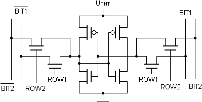
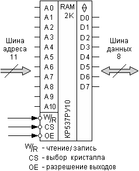
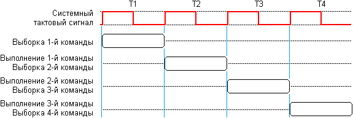
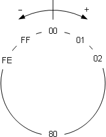
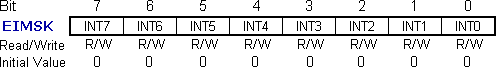

|
|
|
Курс лекций "Микропроцессорные системы управления"
|
|
|
 |
| Цифровые микропроцессорные системы управления |
|
1.1 Эволюция средств вычислительной техники
|
История создания программируемых вычислительных устройств началась ещё в 1830 г. с идеи, предложенной английским математиком Чарльзом Бэбиджем
(Charles Babage). В 1822 году Бэббидж задумался о создании большой разностной машины, которая позволила бы заменить множество людей, занимающихся
вычислением различных астрономических, навигационных и математических таблиц. Это позволило бы сэкономить затраты на оплату труда, а также
избавиться от ошибок, связанных с человеческим фактором.
Практическое же появление вычислительных машин стало возможным только в XX в. в связи с развитием электроники. При этом можно проследить несколько
этапов развития ЭВМ.
Первый этап (до 1955 г.) – ламповые ЭВМ, масса которых достигала 30 т, число электронных ламп – 18 тыс., потребляемая мощность – 150 кВт
(мощность, достаточная для небольшого завода), объёем памяти – 20 10-разрядных десятичных чисел, время выполнения операций: сложения – 0,0002 с,
умножения – 0,0028 с. Числа в ЭВМ вводились с помощью перфокарт и набора на переключателях, а программа задавалась соединением гнезд на специальных
наборных полях. Для ускорения процесса подготовки программ стали создавать первые языки автоматизации программирования (языки символического
кодирования).
Второй этап (до 1965 г.) – появление ЭВМ, построенных на транзисторах, привело к уменьшению их габаритов, массы, энергопотребления и
стоимости, а также к увеличению надёжности и производительности. Транзистор впервые был продемонстрирован 23 декабря 1947 г. тремя сотрудниками фирмы
Bell Telephone Laboratories Джоном Бардиным, Уолтером Бременом и Уильямом Шокли. На этом этапе были созданы специальные алгоритмические языки для
инженерно-технических и экономических расчетов, а также операционные системы (комплексы служебных программ, обеспечивающих лучшее распределение
ресурсов ЭВМ при исполнении пользовательских задач). Эволюция операционных систем шла в направлении обработки пакетов заданий, а также
мультипрограммного режима обработки данных.
- Элементная база – полупроводниковые элементы (транзисторы).
- Соединение элементов – навесной монтаж и печатные платы.
- Габариты – ЭВМ выполнена в виде однотипных стоек.
- Быстродействие – 100 .. 500 тыс. операций в секунду.
- Программирование – на алгоритмических языках, появление ОС, обработка пакетов заданий.
- Оперативная память – 2 ... 32 Кбайт.
Введён принцип разделения времени и микропрограммного управления.
Третий этап (до 1970 г.) – прогресс в области технологии производства интегральных микросхем (ИС) позволил повысить производительность и
снизить стоимость универсальных ЭВМ, а также создать малогабаритные, простые, дешевые и надёжные машины – мини-ЭВМ.
- Элементная база – интегральные схемы.
- Соединение элементов – печатные платы.
- Быстродействие – 1-10 млн. операций в секунду.
- Эксплуатация – вычислительные центры, дисплейные классы, новая специальность – системный программист.
- Программирование – алгоритмические языки, ОС.
- Оперативная память – 64 Кбайт.
- Применяется принцип разделения времени, принцип модульности, принцип микропрограммного управления, принцип магистральности.
- Появление магнитных дисков, дисплеев, графопостроителей.
Мини-ЭВМ первоначально предназначались для замены аппаратно-реализованных контроллеров (устройств управления) в контуре управления каким-либо
объектом, в автоматизированных системах управления технологическими процессами, системах сбора и обработки экспериментальных данных, различных
управляющих комплексах на подвижных объектах и т.д. Низкая цена серийной мини-ЭВМ, большое число серийных устройств связи с объектом управления и
хорошее программное обеспечение обусловили экономическую эффективность использования таких устройств.
Четвёртый этап (до 1978 г.) – успехи в развитии электроники привели к созданию больших интегральных схем (БИС), где в одном кристалле
размещалось несколько десятков тысяч электрических элементов. Это позволило разработать более дешёвые ЭВМ, имеющие большую память и меньший цикл
выполнения команды. Но так как затраты на программирование оставались высокими, то на первый план вышла задача экономии человеческих, а не машинных
ресурсов.
В 1971 г. фирмой Intel был изготовлен первый микропроцессор i4004 – БИС, в котором полностью размещался простой четырёхразрядный процессор.
Появились управляющие устройства, построенные на одной или нескольких БИС, содержащих процессор, память, схемы сопряжения с датчиками и
исполнительными органами в объекте управления.
- Элементная база – большие интегральные схемы (БИС);
- соединение элементов – печатные платы;
- габариты – компактные ЭВМ, ноутбуки;
- быстродействие – 10 .. 100 млн. операций в секунду;
- эксплуатация – многопроцессорные и многомашинные комплексы, любые пользователи ЭВМ;
- программирование – базы и банки данных;
- оперативная память – 2 .. 5 Мбайт;
- телекоммуникационная обработка данных, объединение в компьютерные сети.
Пятый этап (c 80-х г.г.) – улучшение технологии производства БИС позволило изготавливать дешёвые электронные схемы, содержащие миллионы
элементов в кристалле – схемы сверхбольшой степени интеграции (СБИС). Появилась возможность создать устройство с габаритами массового телевизора, в
котором размещались микроЭВМ, клавиатура, экран, дисковый накопитель, а также схемы сопряжения с малогабаритным печатающим устройством, измерительной
аппаратурой, другими ЭВМ и т.д.
- Элементная база – дешёвые сверхбольшие интегральные схемы (СБИС);
- Компактные системы, в которых размещается микроЭВМ, клавиатура, экран, накопитель, а также схемы сопряжения с печатающим устройством,
измерительной аппаратурой, другими ЭВМ и т.д.;
- Возможность параллельно решать на ЭВМ несколько задач;
- Компьютерные игры, прослушивание высококачественной музыки, просмотр фильмов. Ввод печатной, рукописной, голосовой информации, узнавание
пользователя по голосу, перевод с одного языка на другой, способность вести диалог, выполнять команды, подаваемые голосом или
прикосновением;
- Интерфейсы, управляемые непосредственно мозгом (нейроинтерфейсы).
Способность вести диалог, выполнять команды, подаваемые голосом или прикосновением. Возможность параллельно решать на ЭВМ несколько задач.
Основной задачей разработчиков ЭВМ V поколения является создание искусственного интеллекта машины (возможность делать логические выводы из
представленных фактов), развитие “интеллектуализации” компьютеров – устранения барьера между человеком и компьютером. Компьютер теперь используется
и дома, это компьютерные игры, прослушивание высококачественной музыки, просмотр фильмов. Уже сейчас компьютеры способны воспринимать информацию с
рукописного или печатного текста, с бланков, с человеческого голоса, узнавать пользователя по голосу, осуществлять перевод с одного языка на другой.
Это позволяет общаться с компьютерами всем пользователям, даже тем, кто не имеет специальных знаний в этой области.
Наиболее широкое применение нашли микроЭВМ в гибких системах автоматизации производства и научных исследований. В настоящее время развитие идёт в
направлении как повышения вычислительной мощности компьютеров, так и создания однокристальных микроконтроллеров, ориентированных на управление
различными техническими объектами.
|
|
1.2 Принципы построения цифровых систем управления
В современных системах управления широко применяются микропроцессоры, микроконтроллеры и другие средства вычислительной техники. Такая элементная
база позволяет унифицировать аппаратные средства, а также реализовать сложные алгоритмы управления, обеспечивающие высокие качественные
характеристики для широкого круга технических объектов.
Структура аппаратных средств типовой микропроцессорной системы управления приведена на рис. 1. Система содержит микроЭВМ, в состав которой входят
микропроцессор, память, а также устройства связи с объектом (интерфейсы), которые обеспечивают преобразование цифровых кодов на выходе микроЭВМ в
сигналы, воспринимаемые объектом управления, а также преобразование выходных сигналов датчиков в двоичные коды, поступающие в микроЭВМ. Такое
управляющее устройство с некоторым тактом (интервалом квантования) на основании информации о текущем состоянии объекта, а также командных сигналов
рассчитывает управляющее воздействие.
Рис. 1. Система управления на базе микроЭВМ
При построении систем управления на базе микропроцессоров и микроЭВМ следует учитывать следующие особенности программной реализации алгоритмов
управления:
Рис. 2. Классификация устройств схемотехники
- запаздывание, вносимое микроЭВМ;
- временное и амплитудное квантование сигналов;
- возможности реализации сложных логических и вычислительных процедур, обеспечивающих адаптацию к изменениям параметров объектов и возмущающих
воздействий.
Следует заметить, что цифровые системы управления на базе микропроцессоров и микроЭВМ иногда называют устройствами на основе «программируемой»
(гибкой) логики, что означает возможность их перенастройки для управления различными объектами путём изменения программы. Альтернативным методом
построения цифровых систем управления является использование «жёсткой» логики (комбинационных схем не имеющих внутренней памяти, где уровни
сигналов на выходах однозначно определяются уровнями входных сигналов в данный момент времени), при которой ядром устройства является заказная БИС,
реализующая алгоритмы управления для узкого круга объектов. Очевидно, что второй метод на сегодняшний день является более дорогостоящим, однако он
широко используется при массовом производстве устройств управления для типовых объектов либо при создании систем управления объектами специального
назначения. Для промышленного применения наиболее рациональным является первый метод, основанный на применении микропроцессоров и
микроконтроллеров.
|
| Архитектура управляющей микроЭВМ |
|
2.1 Основные понятия и определения
Микропроцессор – программно-управляемое устройство, предназначенное для обработки цифровой информации и управления процессом этой
обработки. Обычно микропроцессор (МП) состоит из одной (иногда нескольких) интегральных схем и имеет доступ к внешней памяти. Он также обеспечивает
передачу информации между компонентами ЭВМ и внешней средой. МП является основой любой микроЭВМ и производится по технологии больших интегральных
схем (БИС).
МикроЭВМ – вычислительное или управляющее устройство, содержащее микропроцессор, оперативное запоминающее устройство (ОЗУ), постоянное
запоминающее устройство (ПЗУ), таймер, порты ввода/вывода, генератор тактовых импульсов, блок питания и другие элементы.
Однокристальный микроконтроллер – БИС, содержащая в себе МП, ОЗУ, ПЗУ небольшого объёма, таймеры/счётчики, порты ввода/вывода, и
ориентированная на решение задач управления. Появлению микроконтроллеров способствовало совершенствование технологии производства микроэлектроники,
что позволило интегрировать на одном кристалле большинство функциональных блоков управляющей микроЭВМ. В большинстве микроконтроллеров используется
восьмиразрядное вычислительное ядро с упрощенной системой команд. Память физически и логически разделена на память программ и память данных.
Подсистема ввода/вывода микроконтроллеров часто имеет аналого-цифровые и цифроаналоговые преобразователи для возможности ввода сигналов от датчиков
и вывода сигналов на исполнительное устройство.
Цифровой процессор сигналов (Digital Signal Processor, DSP) – это специализированный микроконтроллер, ориентированный на решение задач
цифровой фильтрации в режиме реального времени. Обычно DSP имеет мощное вычислительное ядро, спроектированное, однако, только для решения
узкоспециализированных задач. По этой причине сигнальные процессоры имеют сравнительно невысокую стоимость по сравнению с обычной микроЭВМ,
реализующей аналогичные функции. Применяемые, например в области телекоммуникаций DSP имеют производительность до 1,6 млрд. операций/с. С
архитектурной точки зрения такие процессоры могут представлять собой аналоговые функциональные преобразователи сигналов. Часто они выполняют функции
аналоговых схем (например производят генерацию колебаний, модуляцию, смещение, фильтрацию, кодирование и декодирование сигналов в реальном масштабе
времени и т.д., заменяя сложные схемы, состоящие из операционных усилителей, катушек индуктивности, конденсаторов и т.д.).
2.2 Архитектура микропроцессора
Особенность МП как устройства с программируемой логикой заключается в подчинённости его аппаратного состава (или структуры совокупности элементов,
составляющих МП, и связей между ними) принципу программируемости. Это означает, что функции, реализуемые МП, определяются не столько его структурой,
сколько последовательностью управляющих слов (команд), поступающих из программной памяти на входы МП. При изменении этой последовательности
изменяется и функция, выполняемая МП. Поэтому разработчик микроЭВМ при анализе функциональных возможностей МП должен учитывать не только его
структуру, но и возможности программной реализации функций.
Рис. 3. Обобщённая структурная схема ЭВМ
Все ЭВМ содержат следующие функциональные блоки, имеющие свою архитектуру: процессор, состоящий из арифметико-логического устройства (АЛУ),
регистров общего назначения (РОН) и устройства управления (УУ), память (оперативная – ОЗУ и постоянная – ПЗУ), устройства ввода-вывода информации.
Устройство управления формирует управляющие сигналы для работы РОН и АЛУ, а те, в свою очередь, формируют признаки (или флаги). Объединение
функциональных блоков в ЭВМ осуществляется посредством системы шин: шины данных, по которой осуществляется обмен данными между блоками ЭВМ, шины
адреса, используемой для передачи адресов, по которым осуществляется обращение к различным устройствам ЭВМ, и шины управления для передачи
управляющих сигналов (рис. 3).
Связь с пользователем осуществляется с помощью пульта управления, который позволяет выполнить такие действия, как пуск ЭВМ; останов, под
действием которого прекращается поступление сигналов с генератора тактовых импульсов и процессор переходит в состояние ожидания; загрузка начального
адреса программы; её пошаговое выполнение при отладке.
МП можно классифицировать по нескольким признакам:
1. По количеству БИС различают однокристальные, многокристальные и многокристальные секционные микропроцессоры.
В однокристальном МП все его аппаратные средства реализованы в виде одной БИС, имеющей фиксированную разрядность и жёсткую систему команд.
Параметры однокристальных микропроцессоров улучшаются по мере увеличения степени интеграции элементов в кристалле и числа выводов корпуса. Однако
возможности однокристальных микропроцессоров ограничены аппаратными ресурсами кристалла и корпуса. Поэтому при разбиении его логической структуры на
функционально законченные части можно реализовать процессор в виде нескольких работающих автономно БИС с фиксированной разрядностью и гибкой системой
команд. Такой МП называется многокристальным (рис. 4).

Рис. 4. Многокристальный секционный процессор При создании высокопроизводительных многоразрядных микропроцессоров требуется множество аппаратных средств, не реализуемых в доступных БИС,
поэтому возникает необходимость в дальнейшем функциональном разбиении логической структуры МП вертикальными и горизонтальными плоскостями. В
результате такого разделения на конструктивно законченные части создаются условия реализации каждой функции в виде отдельной БИС. Все они образуют
комплект многокристального секционного микропроцессора (рис. 3) с произвольной разрядностью и гибкой системой команд. Таким образом,
микропроцессорная секция – это БИС, предназначенная для обработки нескольких разрядов данных или выполнения определённых управляющих операций.
2. По организации внешних шин различают микропроцессоры с раздельными или совмещенными шинами адреса и данных.
3. По организации внутренних шин различают микропроцессоры с одной, двумя и тремя внутренними шинами.
В одношинных МП все его элементы имеют одинаковый интерфейс и подключены к единой информационной шине, по которой передаются коды данных, адресов
и управляющих сигналов. В многошинных процессорах его элементы группами подключаются к своей информационной шине. Это позволяет осуществить
одновременную передачу информационных сигналов по нескольким (или всем) шинам. Такая организация систем усложняет их конструкцию, однако,
увеличивает производительность.
4. По организации стека различают микропроцессоры со встроенным, расположенным на кристалле МП и автономным стеком, который реализован в
оперативной памяти.
5. МП также различают по их возможности выполнять за один машинный цикл одну или более команд. Это возможно при построении МП по конвейерному
принципу, что позволяет совместить по времени несколько операций выполнения команды. При этом рационально используются аппаратные ресурсы и
повышается производительность. Однако это ведёт к резкому росту транзисторного бюджета, увеличивает площадь кристалла, а значит и его стоимость. Если
архитектура вычислительного ядра имеет несколько декодеров команд, которые могут нагружать работой множество исполнительных блоков (т.е. имеет
несколько конвейеров), то такие МП называют суперскалярными. Планирование исполнения потока команд в них является динамическим и осуществляется самим
вычислительным ядром.
6. По количеству одновременно выполняемых потоков команд микропроцессоры делят на одно- и многопоточные. ЭВМ с многопоточным МП
рассматривается программным обеспечением как система, имеющая более одного центрального процессора со своими наборами РОН, хотя и не всегда с
соответствующим количеством АЛУ и устройств управления. ЭВМ с многопоточным МП способна выполнять более одного потока команд (более одной программы)
одновременно. Если же каждый набор РОН многопоточного МП имеет ещё и собственный исполнительный блок (ядро), то такой процессор называют
многоядерным.
2.3 Организация шин микропроцессорных систем
Все функциональные блоки, как в самом микропроцессоре, так и в микроЭВМ, объединяются с помощью набора проводников, называемого шиной.
Посредством шины данных осуществляется обмен информацией между блоками ЭВМ. Шина адреса используется для передачи адресов, по которым осуществляется
обращение к различным устройствам ЭВМ. Шина управления необходима для передачи управляющих сигналов. Различают внутренние (в самом микропроцессоре)
и внешние шины, а также МП с одной, двумя и тремя внутренними шинами (рис. 5).
|  | |
| а | б | в |
Рис. 5. Топология:
а – трёхшинная, б – двухшинная, в – одношинная
Трёхшинная топология не требует буферных регистров, поэтому возможно выполнение арифметических и логических операций за один такт, включая выборку
операндов из РОН и запись результатов в один из регистров. Этот способ помимо высокого быстродействия имеет еще одно важное достоинство – отсутствие
буферных регистров. Главный недостаток такой топологии заключается в значительной занимаемой площади шин на кристалле (до 18%).
Рационального баланса между числом внутренних шин и числом элементов микропроцессора можно достичь при двухшинной организации, которая при меньшей
площади, занимаемой шинами на кристалле, требует введения по меньшей мере одного буферного регистра. Это значит, что арифметические и логические
операции в таком МП будут выполняться не менее чем за два такта:
1) загрузка буферного регистра одним из операндов;
2) выполнение операции в АЛУ над содержимым буферного регистра и одного из РОН; запись результата в РОН.
Наконец, возможна организация МП на основе только одной шины. Наименьшая площадь, занимаемая шиной по сравнению с рассмотренными выше вариантами,
позволяет в максимальной степени усложнить архитектуру МП при фиксированной площади кристалла. Однако необходимость введения не менее двух буферных
регистров увеличивает цикл выполнения операций уже до трёх тактов:
1) загрузка буферного регистра одним из операндов;
2) загрузка второго буферного регистра вторым операндом;
3) выполнение операции в АЛУ над содержимым буферных регистров и запись результата в РОН.
При построении вычислительной системы необходимо учитывать, что выходные линии шин МП позволяют подключать не более одной-двух TTL-нагрузок,
поэтому необходимо использовать внешние буферные усилители (шинные формирователи). Внешние шины обеспечивают связь микропроцессора с ОЗУ, ПЗУ и
портами вода/вывода. При их организации существует два ограничения:
1) на количество внешних выводов БИС;
2) на нагрузочную способность линий.
Ограничение количества внешних выводов корпуса микросхемы привело к появлению микропроцессоров с совмещенной (мультиплексированной) шиной
(рис. 6), по которой в разные моменты времени передаются сигналы как адреса, так и данных.
Характерной особенностью шины данных является её двунаправленность. Под двунаправленностью понимается возможность передачи данных в разные
моменты времени в различных направлениях, например, сначала по шине данных можно передавать данные от процессора к периферии, а затем в обратном
направлении. Двунаправленность шины данных обеспечивается трёхстабильными буферными регистрами, через которые периферийные устройства подключаются к
шине. Выходы трёхстабильных регистров, кроме состояний логического 0 и логической 1, могут принимать третье пассивное, или, так называемое,
высокоимпедансное состояние, благодаря чему они оказываются как бы отключенными от соответствующих линий шины данных.

Рис. 6. Микропроцессор:
а – с раздельными шинами, б – с совмещёнными шинами Шина данных является двунаправленной, а её разрядность определяет количество информации, которой способен обмениваться МП с другими устройствами
за единицу времени. Разрядность шины данных обычно кратна восьми (8, 16, 32, 64, …) бит.
Другое важное понятие – разрядность микропроцессора. Говоря о нём, имеют ввиду разрядность его регистров общего назначения, а не
разрядность внутренней или внешней шины данных. К тому же они могут и не совпадать. Так, 16-разрядный i8088, который был прародителем современных
десктопных процессоров с системой команд x-86, имел более узкую, 8-битную внешнюю шину данных. А 32-разрядный Pentium – наоборот, 64-битную шину
данных для быстрой загрузки внутренней кэш-памяти.
Разрядность шины адреса характеризует максимальный размер адресного пространства памяти, к которой может иметь доступ МП, хотя не обязательно,
что в системе такой объём физически присутствует. Количество адресных линий n определяет 2n ячеек памяти, т.е., к примеру, с помощью 16
адресных линий МП может работать с 216 = 65536 ячейками памяти. В простых микропроцессорных системах шина адреса однонаправленная, т.к.
только процессор может генерировать сигналы кода адреса, а остальные устройства – только воспринимать их. Шина адреса также используется для выбора
портов ввода-вывода.
Шина управления состоит из набора линий для определения операций и состояний работы различных узлов ЭВМ – сброс, чтение/запись памяти, захват шин,
подтверждение захвата шин, сигналы прерываний, прямой доступ к памяти, и другие. Каждый МП имеет уникальную систему сигналов управления. Все эти
сигналы в электронной системе согласованы с системными тактовыми импульсами синхронизации. Эти сигналы задают начало и последовательность
срабатывания всех элементов ЭВМ. Для формирования системных тактовых импульсов применяется генератор, стабилизированный кварцевым резонатором.
При использовании шинной организации как внутри кристалла, так и при подключении нескольких БИС к одной шине возникает дополнительная трудность,
связанная со способом связи нескольких элементов с одним проводником общей шины. В качестве примера проанализируем способы организации общей шины в
МП, выполненном по схеме на рис. 4, в). С каждым проводником общей шины связаны три входа (РОН, буферный регистр и регистр сдвига) и два выхода (РОН,
АЛУ). Известны три способа решения этой задачи (рис. 6): логическим объединением, объединение с помощью схем с открытым коллектором и объединение с
использованием схем с тремя устойчивыми состояниями.
 |
| а | б | в |
Рис. 7. Подключение нескольких источников к одной шине:
а – логическим объединением, б – «монтажным ИЛИ», в – объединением на базе схем с тремя устойчивыми состояниями
Логическое объединение (рис. 6, а) выполняется с помощью схемы ИЛИ, на входы которой при подаче управляющего сигнала на общей шине появляется
выходной сигнал АЛУ, а при подаче сигнала – выходной сигнал РОН. Этот способ может использоваться при создании внутренней шины (на кристалле).
Объединение с помощью схем с открытым коллектором характеризуется электрическим соединением выходов нескольких логических элементов. Поэтому этот
способ часто называют «монтажным ИЛИ» (рис. 6, б). При простом соединении выходов элементов отпадает необходимость в схеме ИЛИ, используемой при
логическом соединении, а следовательно, нет принципиального ограничения на число объединяемых выходов. Это позволяет применять данный способ при
организации не только внутренних, но и внешних шин, учитывая, однако, что количество объединяемых линий ограничено конечным сопротивлением закрытых
транзисторов, что фактически ограничивает область применимости этого способа организации.
Логическим его развитием, устраняющим указанный недостаток, является использование в качестве нагрузочного резистора нелинейного элемента.
Объединение с использованием схем с тремя состояниями отличается именно таким характером нагрузки. Третье состояние обеспечивается, когда оба
транзистора одного каскада закрыты. Этот способ широко применяются при организации внешних шин, которые реализуются в виде дорожек печатной платы или
плоского кабеля.
2.4 Обработка информации в микропроцессоре
Рассмотрим процесс обработки информации в микропроцессоре на примере упрощённой схемы, представленной на рис. 8.
Микропроцессор имеет:
- РОН – регистры общего назначения, которые используются для хранения данных и адресов. Кроме РОН в МП имеются специальные регистры: счётчик
команд, указатель стека и др.;
- БР – буферный регистр, используется для промежуточного хранения операнда, иногда выполняет функции регистра сдвига;
- АЛУ – комбинационная схема, построенная на логических элементах И, ИЛИ, НЕ, выполняющая арифметические и логические преобразования
информации.

Рис. 8. Упрощённая схема микропроцессора Выполнение команд разбивается на такты и осуществляется в операционном устройстве под управлением УУ. Рассмотрим пример выполнения операции
сложения R0 → R1 = R0:
Такт 1. R0 → Шина 2 → БР ; данные R0 → по шине 2 передаются в БР
Такт 2. R1 → Шина 2 → АЛУ ; данные R1 по шине 2 передаются в АЛУ
Такт 3. Сложение в АЛУ
Такт 4. АЛУ → Шина 1 → R0 ; результат АЛУ по шине 1 передаётся в R0
Эта схема универсальна, т.к. позволяет выполнять множество различных операций. Для работы операционного устройства необходимо формировать
управляющие сигналы, обеспечивающие выдачу синхроимпульсов для чтения, записи, адресацию РОН и настройку АЛУ на конкретную операцию. При выполнении
арифметических, логических и некоторых других операций в специальном регистре слова-состояния программы формируются признаки (флаги) результата,
необходимые для операций условного перехода. Реализация более сложных команд требует использования специальных блоков (умножения, деления, и др.).
Для ускорения выполнения определённых операций вводятся дополнительно специальные операционные узлы (например циклические сдвигатели).
Кроме указанных блоков микропроцессор имеет ряд служебных регистров.
Регистр флагов (регистр статуса или регистр слова-состояния процессора) предназначен для фиксации и хранения признака, характеризующего
результат последней выполненной арифметической или логической операции. К примеру, флаг равенства результата нулю, знак результата, возникновение
переноса из старшего разряда, и т. д. Содержимое регистра флагов используется устройством управления для реализации условных переходов.
Счётчик команд. Согласно принципу выполнения программ, её соседние команды располагаются в ячейках памяти со следующими по порядку
адресами и выполняются преимущественно в той же очерёдности, в какой они размещены в памяти ЭВМ. Таким образом, адрес очередной команды может быть
получен путём увеличения адреса ячейки, из которой была считана текущая команда, на длину выполняемой команды, представленную числом занимаемых ею
ячеек. Реализацию такого режима и призван обеспечивать счётчик команд – двоичный регистр, в котором хранится и модифицируется адрес очередной
команды программы. Перед началом вычислений в СК заносится адрес ячейки основной памяти, где хранится команда, которая должна быть выполнена первой.
В процессе выполнения каждой команды путём увеличения содержимого СК на длину выполняемой команды в счётчике формируется адрес следующей подлежащей
выполнению команды. В данном случае любая команда занимает одну ячейку, поэтому содержимое СК увеличивается на единицу. По завершении текущей
команды адрес следующей команды программы всегда берётся из счётчика команд. Для изменения естественного порядка вычислений (перехода в иную точку
программы) достаточно занести в СК адрес точки перехода.
Регистр команд. Счётчик команд определяет лишь местоположение ко-манды в памяти, но не содержит информации о том, что это за команда.
Чтобы приступить к выполнению команды, её необходимо извлечь из памяти и разместить в регистре команд (РК). Этот этап носит название выборки команды.
Только с момента загрузки команды в РК она становится «видимой» для процессора. В РК команда хранится в течение всего времени её выполнения.
2.5 Управление обработкой информации
Управление операциями в ЭВМ осуществляет устройство управления с помощью управляющих сигналов, генерируемых по командам программы. Коды операции
команд программы, воспринимаемые управляющей частью микропроцессора, расшифрованные и преобразованные в ней, дают информацию о том, какие операции
требуется выполнить, где в памяти расположены данные, куда необходимо направить результат и где расположена следующая за выполняемой команда.
Большинство современных процессоров для персональных компьютеров основаны на той или иной версии циклического процесса последовательной обработки
данных, предложенного Джоном фон Нейманом в 1946 году. Отличительной особенностью архитектуры фон Неймана является то, что команды и данные хранятся
в одной и той же памяти.
В соответствии с циклом фон Неймана (рисунок 9), устройство управления в рамках тактовых интервалов (такт – минимальный рабочий интервал, в
течение которого совершается одно элементарное действие; цикл – интервал времени, в течение которого выполняется одна машинная операция)
осуществляет: выборку команды. При этом процессор выставляет число, хранящееся в счётчике команд, на шину адреса и выдаёт памяти команду
чтения. Выставленное число является для памяти адресом; память, получив адрес и команду чтения, извлекает содержимое, хранящееся по этому адресу, и
выставляет его на шину данных, сопровождая сигналом готовности. Процессор получает число с шины данных, помещает его в регистр команд.

Рис. 9. Процесс выполнения команды в МП На этапе дешифрации процессор интерпретирует содержимое регистра команд как машинную инструкцию. При этом производится анализ формата,
служебных признаков и вычисление адреса операнда (операндов); установливается временная последовательность функциональных управляющих сигналов;
формирование управляющих импульсов и передача их на шины функциональных частей ЭВМ.
При этом на третьем этапе фаза выборки может повторяться, если команда длинная и не помещается в одну ячейку памяти. Если команда не
является командой перехода, процессор увеличивает на единицу (в предположении, что длина каждой команды равна единице) содержимое счётчика команд; в
результате там образуется адрес следующей команды.
На четвёртом этапе производится выполнение команды, анализ результата, и сохранение.
Данный цикл выполняется неизменно, и именно он называется процессом (откуда и произошло название устройства). Во время процесса процессор
считывает последовательность команд, содержащихся в памяти, и исполняет их. Такая последовательность команд называется программой и представляет
алгоритм работы процессора. Очерёдность считывания команд изменяется в случае, если процессор считывает команду перехода, – тогда адрес следующей
команды может оказаться другим. Другим примером изменения процесса может служить случай получения команды остановка или переключение в режим
обработки прерывания.
Команды центрального процессора являются самым нижним уровнем управления компьютером, поэтому выполнение каждой команды неизбежно и безусловно.
Не производится никакой проверки на допустимость выполняемых действий, в частности, не проверяется возможная потеря ценных данных. Чтобы компьютер
выполнял только допустимые действия, команды должны быть соответствующим образом организованы в виде необходимой программы.
Скорость перехода от одного этапа цикла к другому определяется тактовым генератором, который вырабатывает импульсы, служащие ритмом для
центрального процессора. Частота тактовых импульсов называется тактовой частотой.
Одной из самых сложных частей компьютерного проектирования является создание управляющей логики, которая диктует каждой части процессора что
делать, чтобы выполнить определенную команду. В микропроцессорах используют два метода выработки совокупности функциональных управляющих сигналов:
аппаратный и микропрограммный.
Выполнение операций в машине сводится к элементарным преобразованиям информации (передача информации между узлами в блоках, сдвиг информации в
узлах, логические поразрядные операции, проверка условий и т.д.) в логических элементах, узлах и блоках под воздействием функциональных управляющих
сигналов устройства управления. Элементарные преобразования, не разложимые на более простые, выполняются в течение одного такта сигналов
синхронизации и называются микрооперациями.
В аппаратных (схемных) устройствах управления (рис. 10) каждой операции соответствует свой набор логических схем, вырабатывающих определённые
функциональные сигналы для выполнения микроопераций в определенные моменты времени. Для каждого кода операции (КОП) Yi выдаются в течение
нескольких тактов. УУ оптимизируется для конкретной системы команд, которую в дальнейшем изменить нельзя. При этом способе построения устройства
управления реализация микроопераций достигается за счет однажды соединённых между собой логических схем, поэтому ЭВМ с аппаратным устройством
управления называют ЭВМ с жёсткой логикой управления. Это понятие относится к фиксации системы команд в структуре связей ЭВМ и означает практическую
невозможность каких-либо изменений в системе команд ЭВМ после её изготовления.
Рис. 10. Аппаратное устройство управления
В 1951 году британский учёный в области компьютерных наук Морис Уилкс предложил идею микрокода: вместо построения управляющей логики из сложных
схем логических элементов, управляющая логика может быть заменена специальным кодом – микрокодом. Чтобы выполнить команду, компьютер выполняет
несколько простых микрокоманд, которые задаются микрокодом. С помощью микрокода построение управляющей логики процессора становится задачей
программирования, а не задачей логического проектирования.
Такой способ называется микропрограммной реализацией устройства управления (рисунок 11). При этом в состав последнего вводится ЗУ, каждый разряд
выходного кода которого определяет появление функционального сигнала управления. Поэтому каждой микрооперации ставится в соответствие свой
информационный код – микрокоманда. Набор микрокоманд и последовательность их реализации обеспечивают выполнение любой сложной операции. Набор
микроопераций называют микропрограммами. Способ управления операциями путём последовательного считывания и интерпретации микрокоманд из ЗУ (наиболее
часто в виде микропрограммного ЗУ используют быстродействующие программируемые логические матрицы), а также использования кодов микрокоманд для
генерации функциональных управляющих сигналов называют микропрограммным. При этом Yi для всех команд и всех тактов записываются в ПЗУ в виде
микрокоманд. Микрокоманды имеют разрядность 50…100, поэтому для сокращения длины их кодируют, а затем декодируют. Адрес первой микрокоманды
определяет КОП, а каждая микрокоманда соответствует одному такту.
Рис. 11. Микропрограммное устройство управления:
М/к – микрокоманда;
ДШ – дешифратор;
СУ – схема управления
Микрокод был обычным явлением в мэйнфреймах 60-х годов, но ранние микропроцессоры, такие как i8080, 6502 и Z-80, не использовали микрокод,
поскольку не имели места для его хранения. Однако в более поздних процессорах, таких как i8086 и Motorolla 68000, применяли микрокод, используя
преимущество увеличения плотности микросхем. Это позволило в i8086 реализовать сложные команды (такие как умножение и копирование строк), без
усложнения схемы. Недостаток такого подхода заключался в необходимости значительной части площади кристалла: на рисунке 12 схема микрокода показана
в правом нижнем углу фотографии.
Под микроскопом видно содержимое микрокода; биты могут быть считаны в зависимости от наличия или отсутствия транзисторов в каждой позиции. ПЗУ
состоит из 512 микрокоманд, каждая шириной в 21 бит. Каждая из них определяет перемещение данных между источником и получателем. Она также
определяет микрокоманду, которая может быть командой перехода, операцией АЛУ, операцией с памятью, вызовом подпрограммы микрокода или его учётом.
Микрокод довольно эффективен; простые команды, такие как инкремент или декремент, состоят из двух микрокоманд, в то время как более сложное
копирование строки реализовано при помощи восьми микрокоманд.
Рис. 12. Фото кристалла i8086
К микропрограммам предъявляют требования функциональной полноты и минимальности. Первое требование необходимо для обеспечения возможности
разработки микропрограмм любых машинных операций, а второе связано с желанием уменьшить объём используемого оборудования. Учёт фактора быстродействия
ведёт к расширению микропрограмм, поскольку усложнение последних позволяет сократить время выполнения команд программы.
2.6 Архитектура 8-разрядного микропроцессора
Типичным представителем 8-битных однокристальных микропроцессоров является разработанный фирмой Intel в 1974 г. i8080 или его советский аналог
К580ИК80. Кристалл процессора производился по технологическим нормам 6 мкм, вмещал 6000 транзисторов и имеел тактовую частоту 2 МГц, а более
поздний его вариант i8080A (советский аналог К580ВМ80А) – 2,5 МГц. Процессор снабжён 8-разрядной шиной данных, 16-разрядной шиной адреса, с помощью
которой адресует 216 = 64 Кбайт памяти, 256 устройств ввода и 256 устройств вывода. МП работает от трёх источников питания – +5, +12 и
–5В и рассеивает мощность 1,25 Вт. Длительность такта при частоте 2 МГц составляет 0,5 мкс, при этом быстродействие – 500 000 коротких операций
(регистр-регистр) в секунду.
Программно-аппаратная модель i8080 представлена на рис. 13.
Рис. 13. Фото и программно-аппаратная модель i8080

Рис. 14. Структурная схема i8080
Арифметическо-логическое устройство (АЛУ) обеспечивает выполнение арифметических, логических операций и операций сдвига над двоичными данными,
представленными в дополнительном коде, или над двоично-десятичными данными. Устройство содержит схему десятичной коррекции (СДК), позволяющую
производить операции десятичной арифметики. По результатам операций в АЛУ формируется ряд признаков, которые записываются в регистр флагов F.
Флаг переноса С устанавливается в единицу, если в результате выполнения команды появляется перенос из старшего разряда. Дополнительный признак
переноса AС устанавливается в единицу при возникновении переноса из третьего разряда. Используется в командах десятичной арифметики. Флаг чётности
Р устанавливается в единицу, если число единиц в разрядах результата чётное. Флаг нуля Z устанавливается в единицу, если результат равен нулю.
Флаг знака S указывает знак числа и равен единице, если число отрицательное, или нулю, если число положительное.
Блок регистров производит приём, хранение и выдачу различной информации, участвующей в процессе выполнения программы, и содержит счётчик команд
(Program Counter, PC), указатель стека (Stack Pointer, SP), регистры общего назначения (РОН), регистры временного хранения и регистр адреса.
16-разрядный счётчик команд хранит текущий адрес команды. Содержимое счётчика команд автоматически увеличивается после выборки каждого байта команды.
16-разрядный указатель стека содержит начальный адрес памяти, используемый для хранения и восстановления содержимого программно-доступных регистров
МП. Содержимое указателя стека уменьшается, когда данные загружаются в стек, и увеличивается, когда данные выбираются из стека. 8-разрядные регистры
общего назначения В, С, D, Е, Н, L могут применяться как накопители и указатели (16-разрядный адрес операнда определяется содержимым пары регистров).
Основной однобайтный регистр процессора – это аккумулятор A. Над его содержимым выполняется наибольшее количество арифметических и логических команд,
а также команды ввода/вывода. Регистры временного хранения W, Z используются для приема и временного запоминания второго и третьего байт команд
переходов, передаваемых с внутренней магистрали ЦПУ в счётчик команд. Эти регистры являются программно-недоступными. 16-разрядный регистр адреса
принимает и хранит в течение одного машинного цикла адрес команды или операнда и выдает его через буфер адреса на однонаправленную выходную
шину А0-А15. Буфер адреса выполнен в виде выходных формирователей, имеющих на выходе состояние «Отключено».
Устройство управления формирует комплекс управляющих сигналов, организующих выполнение поступившей в МП команды, и состоит из регистра команд,
программируемой логической матрицы (ПЛМ) и схемы управления узлами. 8-разрядный регистр команд осуществляет прием и хранение команды, поступающей по
шине данных. Программируемая логическая матрица дешифрирует код операции команды и формирует микрооперации в соответствии с микропрограммой
выполнения команды. Схема управления узлами вырабатывает для различных узлов микропроцессора необходимые управляющие сигналы. 8-разрядный буфер
данных обеспечивает ввод команд и данных в МП, вывод данных через формирователи, имеющие высокоомное состояние.
Сигнал «Сброс» обнуляет счётчик команд PC (но не регистры), что эквивалентно выполнению программы с адреса 0000H.
Схема синхронизации и управления состояниями МП формирует машинные такты и циклы, которые координируют выполнение всех команд, и вырабатывает
сигнал SYNC «Синхронизация», определяющий начало каждого машинного цикла. Для выполнения команды требуется 1–5 машинных циклов, каждый из которых
может состоять из 3–5 тактов (Т1-Т5). Длительность каждого из них соответствует периоду следования противофазных тактовых импульсов Ф1, Ф2.
Первый цикл выполнения любой команды, – это цикл выборки (такт Т1), в котором содержимое счётчика команд выдаётся на адресную шину, а на шину
данных – слово-состояние машинного цикла (ССМЦ), сопровождаемое сигналом синхронизации, по которому это слово записывается в буферный регистр
внешних схем управления. ССМЦ позволяет различить 10 типов машинного цикла (чтение первого байта команды, ввод/вывод, чтение/запись в память,
чтение/запись в порты ввода/вывода). В такте Т2 содержимое счётчика команд увеличивается на единицу и осуществляется анализ управляющих сигналов
«Готовность» и «Захват шин». В цикле чтения/записи на такте Т3 данные принимаются из памяти по шине данных и записываются в регистр команд (если
выполняется цикл выборки команды) или в один из регистров МП. В тактах Т4 и Т5, если они необходимы, выполняются действия над операндами. Если
команда включает несколько циклов, то по завершении текущего машинного цикла процессор переходит к такту Т1 следующего цикла.
2.7 Типы архитектур МП
Команды, составляющие программу, хранятся в памяти ЭВМ. И чем быстрее процессор сможет получить необходимые данные, и вернуть результат, тем,
очевидно, его работа будет эффективнее. В связи с этим, различают несколько архитектур МП, основанные на различном принципе взаимодействия с
операционным блоком:
- регистровая;
- стековая;
- архитектура, ориентированная на память.
Регистровая архитектура определяет наличие большого регистрового файла внутри БИС МП (поле памяти с произвольной записью и выборкой
информации). Её достоинства в высокой скорости работы и использовании сокращённой адресации из-за небольшой длины команд. Но при частой смене
программ (мультипрограммирование, задачи управления) эффективность этой архитектуры падает, т.к. при переключении необходимо сохранять и перегружать
содержимое регистров. Кроме того, большое количество регистров трудно расположить на кристалле из-за меньшей плотности расположения логических схем,
чем схем памяти. Часто регистровое поле называют регистровым сегментом RSEG.
Стековая архитектура использует поле памяти с упорядоченной последовательностью записи и выборки информации. Она эффективна при работе с
подпрограммами (задачи управления), однако стек на кристалле мал и быстро переполняется. Эта архитектура практически не применяется как
самостоятельная, а служит дополнением к другим видам архитектур.
Архитектура память-память обеспечивает расположение регистров и стека в ОЗУ. Операнды, после выборки из ОЗУ, обработки в МП заносятся
обратно в память, а не сохраняются на регистрах. Оценку этого способа необходимо производить с учётом быстродействия МП и ОЗУ. Например, в
микроконтроллерах, где ОЗУ расположено на кристалле и имеет быстродействие сравнимое с быстродействием остальных схем, эта архитектура эффективна.
Если ОЗУ расположено вне кристалла и имеет небольшое быстродействие, то это неэффективно. Достоинства этой архитектуры в фактически неограниченной
свободе размещения данных (большое количество регистров в ОЗУ); быстрое контекстное переключение, т.к. для переключения регистрового (контекстного)
файла необходимо только изменить регистр-указатель начального адреса; упрощена связь с другими МП в многопроцессорных системах и контроллерах внешних
устройств. Однако наличие двухадресных команд увеличивает длину программ.
Архитектура память-память часто используется в микро ЭВМ, контролерах для работы в реальном режиме времени, при большом количестве прерываний,
вызовов подпрограмм, мультипрограммировании, и т.д..
Развитием регистровой архитектуры, преодолевшей её недостатки, является ортогональная регистровая архитектура. Развитие аппаратных средств,
увеличение плотности компоновки позволило на кристалле МП разместить дополнительные (избыточные) блоки регистров, которые могут использоваться для
сохранения ортогональных (других) состояний МП. При переключении с программы на программу, содержимое соответствующего блока регистров не
переписывается в оперативную память и перезагружается в него содержимое для новой программы. Вместо этого каждой программе выделяется собственный
блок регистров. Чем больше таких ортогональных направлений, тем эффективнее работа МП с обслуживанием прерываний и подпрограмм. Выбор банка регистров
осуществляется либо специальными командам, либо автоматически при входе в подпрограммы.
Фон Неймановская (принстонская) и Гарвардская архитектуры построения ЭВМ определяют взаимное расположение команд и данных.
Фон Неймановская (принстонская) архитектура, которая предложена Джоном фон Нейманом в 1945 г. предполагает, что программа и данные находятся в
общей памяти, доступ к которой производится по одной шине данных и управления. Основным достижением группы инженеров, работавших с фон Нейманом,
было осознание того факта, что программа может храниться в памяти вместе с данными. Основным преимуществом такого подхода является его гибкость, так
как для изменения программы достаточно просто загрузить новый код в соответствующую область памяти. По существу, фон-неймановская архитектура,
показанная на рисунке 15 а), состоит из центрального процессора (ЦП), памяти и общей шины, по которой в обоих направлениях пересылаются данные. ЦП
также должен взаимодействовать и с окружающим миром. При этом данные к/от соответствующих интерфейсных портов передаются по одной общей шине
данных.
Рис. 15. Архитектуры построения памяти в микропроцессорных системах:
а – фоннеймановская; б – гарвардская
Огромным преимуществом фон Неймановской архитектуры является её простота, поэтому данная концепция легла в основу большинства компьютеров общего
назначения. Однако использование общей шины означает, что в любой момент времени может выполняться только одна операция передачи информации.
Соответственно, пересылка данных между ЦП и памятью данных не может осуществляться одновременно с выборкой команды.
Гарвардская архитектура (реализована в 1944г. в ЭВМ Гарвардского университета) соответствует структуре с разделёнными устройствами памяти команд
и данных и отдельными шинами команд и данных. В первое послевоенное десятилетие в Гарвардском университете было создано несколько компьютеров
семейства «Марк», в которых память программ была полностью отделена от памяти данных (программа считывалась с бумажной перфоленты). Такая концепция
была более эффективной, чем фон Неймановская, поскольку код программы мог считываться из памяти программ одновременно с обменом между ЦП и памятью
данных или с операциями ввода/вывода. Однако такие машины были намного сложнее и дороже в изготовлении. А с учётом уровня технического развития
40–50-х годов, высоких экономических затрат, они не получили широкого распространения. С развитием больших интегральных схем и технологии гарвардская
архитектура снова оказалась в центре внимания.
На рисунке 15 б) показаны две физически разделённые шины, используемые для передачи информации между ЦП и неперекрывающимися областями памяти.
Каждая память имеет собственную шину адреса, поэтому адрес ячейки памяти программ никоим образом не связан с адресом ячейки памяти данных. В таком
случае говорят, что обе области памяти находятся в различных адресных пространствах. Фон Неймановская архитектура более экономно расходует аппаратные
ресурсы, а гарвардская позволяет реализовать большее быстродействие, поэтому почти все современные микроконтроллеры, выполнены по Гарвардской
архитектуре.
2.8 CISC, RISC и VLIW архитектуры
CISC. Поначалу развитие микропроцессоров шло в направлении создания компьютеров, способных выполнять как можно больше различных команд.
Это облегчало ручное написание ассемблерных программ, а использование сложных команд значительно сокращало размеры программы и повышало скорость её
выполнения. В последних версиях ЭВМ выразительность ассемблерного кода зачастую не уступала выразительности программы, написанной на языке высокого
уровня. Одной командой можно было сказать практически всё, что угодно. К примеру, такие ЭВМ, как DEC VAX, аппаратно поддерживали команды “добавить
элемент в очередь”, “удалить элемент из очереди” и даже “провести интерполяцию полиномом”! Отсюда и общее название соответствующих архитектур:
CISC – Complex Instruction Set Computers (“компьютеры с набором команд на все случаи жизни”).
Другая особенность – многие команды допускали все возможные методы адресации – к примеру, и операнды, и результат в арифметических
операциях доступны не только в регистрах, но и через непосредственную адресацию, и прямо в памяти. Подобные команды оказалось сложно не только
выполнять, но и просто декодировать. Чтобы машинный код из-за сложных команд не разрастался до огромного размера, команды имели неоднородную
структуру (разное расположение и размеры кода операции и её операндов) и сильно отличающуюся длину (в x86, например, длина команд варьируется от 1
до 15 байт).
Другой проблемой стало то, что при сохранении приемлемой сложности процессора многие команды оказалось невозможно выполнить “аппаратно”, и
поздние CISC-процессоры имеют специальные блоки, которые “на лету” заменяют сложные команды на последовательность простых. В результате
CISC-процессоры оказались весьма трудоёмкими в проектировании и изготовлении. И, наконец, исследования ПО того времени, проведённые фирмой IBM,
наглядно показали, что даже программисты, пишущие на ассемблере, эти возможности CISC-архитектуры почти никогда не использовали, а компиляторы
языков высокого уровня – и не пытались использовать.
К началу восьмидесятых годов классические CISC полностью исчерпали себя. Расширять набор команд в рамках этого подхода дальше не имело смысла,
наоборот – технологи столкнулись с тем, что из-за высокой сложности CISC-процессоров оказалось трудно наращивать их тактовую частоту, а из-за
“медленности” ОЗУ процессорные расшифровки сложных команд работают медленнее обычных подпрограмм. Поэтому стало очевидным, что CISC-процессоры нужно
упрощать.
RISC. Reduced Instruction Set Computer (компьютер с сокращённым набором команд) – архитектура процессора, в
которой быстродействие увеличивается за счёт упрощения команд, чтобы их дешифрация была простой, а время выполнения – короче. Это также облегчает
повышение тактовой частоты и делает более эффективной суперскалярность (распараллеливание команд между несколькими исполнительными блоками).
Для начала разработчики свели к минимуму набор команд и к абсолютному минимуму – количество режимов адресации памяти; упаковав всё, что осталось,
в простой и удобный для дешифрации регулярный машинный код. В частности, в классическом варианте RISC из команд, обращающихся к оперативной памяти,
оставлены только две (Load – загрузить данные в регистр и Store – сохранить данные из регистра; так называемая Load/Store-архитектура), и нет ни
одной команды вроде вычисления синуса, косинуса или квадратного корня. Первые RISC-процессоры даже не имели команд умножения и деления.
Вторая важная особенность RISC-процессоров, – большое количество РОН (более шестнадцати), причём почти все эти регистры полностью равноправны,
что позволяет компилятору свободно распоряжаться ими, сохраняя большую часть промежуточных данных именно там, а не в стеке или оперативной памяти.
В классическом x86 IA-32 всего восемь РОН, причём каждому из них приписано то или иное “специальное назначение” (в ESP хранится указатель на стек)
затрудняющее или делающее невозможным его использование.
Таким образом, RISC-процессоры в 2..4 раза быстрее имеющих ту же тактовую частоту CISC-процессоров с обычной системой команд, несмотря на больший
объём программ (на 30%). Дейв Паттерсон и Карло Секуин сформулировали 4 основных принципа RISC архитектуры:
- Любая команда выполняется за один такт, независимо от её типа.
- Система команд должна содержать минимальное количество наиболее часто используемых простейших команд одинаковой длины.
- Команды обработки данных реализуются только в формате "регистр-регистр" (операнды выбираются из РОН, и результат операции записывается также
в РОН; а обмен между РОН и памятью выполняется только с помощью команд загрузки-записи).
- Состав системы команд должен быть "удобен" для компиляции операторов языков высокого уровня.
Большинство существующих процессоров – RISC-подобные (ARM, AVR, MIPS, PowerPC, ...). Даже МП архитектуры x86 ранее являлись CISC-процессорами, но
начиная с i486, являются CISC-МП с RISC-ядром. Они перед исполнением преобразуют CISC-команды x86 в более простой набор внутренних RISC-команд.
Однако уменьшившаяся сложность RISC-CPU, увеличение тактовой частоты и ускорение исполнения команд привела к увеличению длины программ и сильно
уменьшила их вычислительную плотность (количество вычислений на единицу длины машинного кода). Поэтому при появлении первых RISC-процессоров был
сделан следующий шаг – введён конвейер.
VLIW – Very Large Instruction Word, архитектура появилась в 1990-х годах. В суперскалярных процессорах также есть несколько вычислительных
модулей, но задача распределения работы между ними решается аппаратно. Это сильно усложняет устройство процессора. В процессорах VLIW задача
распределения решается во время компиляции и в командах явно указано, какое вычислительное устройство какую команду должно выполнять.
VLIW можно считать логическим продолжением идеологии RISC, расширяющей её на архитектуры с несколькими вычислительными модулями. Так же, как в
RISC, в инструкции явно указывается, что именно должен делать каждый модуль процессора. Из-за этого длина команд может достигать 128 или даже 256
бит, отдельные поля которых содержат коды, обеспечивающие выполнение различных операций. Таким образом, одна команда вызывает выполнение сразу
нескольких операций параллельно в различных операционных устройствах, входящих в структуру микропроцессора. При компиляции программ, написанных на
языке высокого уровня, производится формирование «длинных» VLIW-команд, каждая из которых обеспечивает реализацию процессором целой процедуры или
группы операций.
В то же время код для VLIW обладает невысокой плотностью. Из-за большого количества пустых команд для простаивающих устройств программы для VLIW-
процессоров могут быть гораздо длиннее, чем аналогичные программы для традиционных архитектур.
Примерами микропроцессоров с архитектурой VLIW являются Intel Itanium, РА8500 компании Hewlett-Packard, Qualcomm Snapdragon, МП серии «Эльбрус»
(«Эльбрус 2000», «Эльбрус S»), а также графические видеопроцессоры AMD/ATI Radeon начиная с R600 и до Northern Islands. МП Snapdragon фирмы
Qualcomm, предназначенные для телефонов и планшетов, содержат сопроцессоры с VLIW-архитектурой Hexagon (QDSP6). На нём могут выполняться алгоритмы
обработки звука и мультимедиа, а также часть цифровой обработки беспроводных сигналов. В нём ежетактно могут запускаться на исполнение наборы из 4
команд. Также некоторые типы DSP-цифровых процессоров сигналов построены на базе архитектуры VLIW.
2.9 Конвейерное выполнение команд
Идея конвейера состоит в том, что производительность цепочки последовательных действий определяется длительностью самой сложной операции. Если
разбить выполнение команды на несколько этапов, то тактовая частота будет обратно пропорциональна времени выполнения самого медленного этапа. Если
это время удастся сделать достаточно малым (а чем больше этапов на конвейере, тем они короче), то можно повысить тактовую частоту, а значит, и
производительность МП.
Выполнение любой команды можно разбить как минимум на пять непересекающихся этапов:
Рис. 16. Диаграмма выполнения команд
- Выборка команды (FETCH) из памяти.
- Декодирование (DECODE). Процессор определяет последовательность действий, необходимых для выполнения команды и переправляет запрос на нужное
исполнительное устройство.
- Подготовка исходных данных для выполнения команды.
- Выполнение команды (EXECUTE).
- Сохранение полученных результатов.
Конвейеризация потенциально применима к любой процессорной архитектуре, независимо от набора команд и положенных в её основу принципов. Даже
самый первый x86-процессор, Intel 8086, уже содержал своеобразный примитивный “двухстадийный конвейер” – выборка новых команд (FETCH) и их
исполнение осуществлялись в нём независимо друг от друга. Однако реализовать что-то более сложное для CISC-процессоров оказалось трудно. Подобных
проблем у RISC-архитектуры гораздо меньше, поэтому конвейеризированные RISC-процессоры появились ранее аналогичных x86.
Существуют три проблемы реализации конвейера.
1. Необходимость наличия блокировок конвейера. Время исполнения команд может сильно варьироваться. Умножение и деление требуют нескольких
тактов, а сложение или побитовые операции – одного такта. Для операций Load и Store, которые могут обращаться к разным уровням кэш-памяти или к
оперативной памяти, это время вообще не определено (и может достигать сотен тактов). Поэтому необходим механизм, притормаживающий выборку и
декодирование новых команд, пока не будут завершены старые. Для решения этой проблемы в процессорах перед исполнительными устройствами появляются
специальные блоки-диспетчеры, которые накапливают подготовленные к исполнению команды, отслеживают выполнение ранее запущенных команд и по мере
освобождения исполнительных устройств отправляют на них новые команды. Даже если исполнение займёт много тактов – внутренняя очередь диспетчера
позволит в большинстве случаев не останавливать подготавливающий всё новые и новые команды конвейер. Новые команды также удаётся декодировать не
каждый такт, поэтому возможна обратная ситуация, когда новых команд за такт не появилось, и диспетчер отправляет команды на выполнение “из старых
запасов”. Так в процессоре возникает разделение на две независимо работающие подсистемы: Front-end – блоки, занимающиеся декодированием команд и их
подготовкой к исполнению, и Back-end – блоки, исполняющие команды.
2. Необходимость наличия системы сброса процессора. Поскольку операции FETCH и EXECUTE всегда выделены в отдельные стадии конвейера, то в
тех случаях, когда в программном коде происходит условный переход, зачастую оказывается, что по какой из веток пойти – пока неизвестно: команда,
вычисляющая код условия, ещё не выполнена. В результате процессор вынужден либо приостанавливать выборку новых команд, пока не будет вычислен код
условия (а это может занять очень много времени и в типичном цикле затормозит процессор), либо, руководствуясь соображениями блока предсказания
переходов, “угадывать”, какой из переходов скорее всего окажется правильным.
3. Наконец, конвейер обычно требует наличия специального планировщика решающего конфликты по данным. Если в программе идёт зависимая
цепочка команд (когда команда-2, следующая за командой-1, использует для своих вычислений данные, только что вычисленные командой-1), а время
исполнения одной команды превосходит один такт, то приходится придержать выполнение очередной команды, до выполнение её предшественницы. Рассмотрим,
к примеру, вычисление выражения A•B+C с сохранением результата в переменной X (X=A•B+C). МП, должен вначале дождаться, пока первая команда сохранит
результат умножения A•B, и только потом прибавлять к полученному результату число С. Цепочки зависимых команд в программах – скорее правило, нежели
исключение, а исполнение команды с записью результата в регистры за один такт – наоборот, скорее исключение, нежели правило, поэтому в той или иной
степени с проблемой зависимости по данным любая конвейерная архитектура обязательно сталкивается. Таким образом, в конвейере появляются сложные
декодеры, заранее выявляющие эти зависимости, и планировщики, которые запускают команды на исполнение, выдерживая паузу между запуском главной
команды и зависимой от неё.
Идея конвейера в процессоре очень красива на словах и в теории, однако реализовать её даже в простом варианте чрезвычайно трудно. Но выгода от
конвейеризации столь велика и несомненна, что приходится с этими трудностями мириться, ведь ничего лучшего до сих пор не придумано.
В 1991-92 годах Intel, выпустила i486 с миллионом транзисторов – CISC-МП с пятистадийным конвейером. Тактовую частоту по сравнению с i386
введение конвейера позволило увеличить втрое, а производительность на единицу частоты – вдвое. В i386 многие команды выполнялись за несколько
тактов; а в i486 среднее “время” исполнения команды в тактах удалось снизить почти вдвое. Правда, расплатой за это стала чудовищная сложность ядра
i486, но быстро растущие технологические возможности кремниевой технологии уже через пару лет позволили освоить производство i486 всем желающим. Но
к тому моменту RISC-архитектуры сделали ещё один шаг вперед – к суперскалярным процессорам.
Суперскалярность – архитектура вычислительного ядра, использующая несколько декодеров команд, которые могут нагружать работой множество
исполнительных блоков. Планирование исполнения потока команд является динамическим и осуществляется самим вычислительным ядром.
2.10 Блок предсказания переходов
Блок предсказания условных переходов – устройство МП определяющее направление ветвлений в исполняемой программе. Он позволяет осуществлять
предварительную выборку команд и данных из памяти, а также выполнять команды, находящиеся после условного перехода, до того, как он будет выполнен.
Существует два основных метода предсказания переходов: статический и динамический.
Статические методы предсказания ветвлений являются наиболее простыми. Их суть состоит в том, что различные типы переходов либо выполняются
всегда, либо не выполняются никогда. Например, предполагается, что условные переходы никогда не выполняются, или, что любой обратный переход на
младшие адреса, является циклом и выполняется, а любой прямой переход на более старшие адреса, не выполняется.
Динамические методы, широко используемые в современных процессорах, подразумевают анализ истории ветвлений. При этом ведётся таблица ранее
совершенных переходов – для каждого условного перехода подсчитывается, сколько раз он “сработал”, а сколько – “был проигнорирован”. Поэтому когда МП
встречает переход, завершающий цикл, включается счётчик совершённых переходов. Если переход сработал несколько раз, то вероятнее всего этот переход
будет срабатывать и в дальнейшем, т.е. делается предсказание, что переход всегда происходит. При этом ошибочная ситуация по окончании цикла не будет
катастрофичной, т.к. ценой максимум двух ошибок обеспечивается точное предсказание во всех остальных случаях. На простых циклах процессор, как
правило, ошибается ещё реже – не более одного раза.
При неправильном предсказании конвейер обычно приходится “сбрасывать”, восстанавливая состояние процессора, предшествующее моменту неправильного
перехода. Для современных МП каждая ошибка предсказания – это десятки вхолостую израсходованных тактов, т.к. за каждый такт можно было бы исполнить
до трёх x86-команд и совершить множество вычислений. Если бы блока предсказания не было, то так “тормозил” бы каждый условный переход.
Точность предсказания современных блоков составляет порядка 98-99%. Может показаться, что совершенствовать блок не имеет смысла, но это не
совсем так. Дело в том, что на производительности гораздо больше сказывается процент ошибок, а не верных предсказаний. А переход от 98-процентной
точности к 99-процентной означает двукратное снижение ошибок – с 2% до 1%!
В архитектуре IA-64 техника предсказания переходов сделала значительный шаг вперед – эти процессоры умеют одновременно вычислять несколько веток
программного кода. То есть, встретив инструкцию условного перехода, процессор просчитывает оба варианта развития событий вплоть до того момента,
пока не станет ясно, какой из них правильный. Поскольку команды “разных вариантов” практически не зависят друг от друга, а исполнительные устройства
Itanium обычно загружены далеко не полностью, то исполнять побочную ветку нередко удаётся с той же скоростью, что и основную, так что даже при
неправильном предсказании условного перехода происходит не остановка процессора на пару десятков тактов, а всего лишь снижение производительности
на небольшом участке кода.
В суперскалярных МП используется ряд методов для ускорения вычислений, характерных прежде всего для них, однако такие методики могут
использоваться и в других типах архитектур. Это внеочередное исполнение команд, переименование регистров и объединение нескольких команд в
одну.
2.11 Кэш
Кэш (англ. cache) – промежуточный буфер с быстрым доступом, содержащий информацию, которая может быть запрошена с наибольшей вероятностью. Доступ
к данным в кэше идёт быстрее, чем из ОЗУ и внешней памяти, за счёт чего уменьшается среднее время доступа и увеличивается общая производительность.
Прямой доступ к данным, хранящимся в кэше, программным путём невозможен. Физически – это память с большей скоростью доступа, предназначенная для
ускорения обращения к данным, содержащимся постоянно в памяти с меньшей скоростью доступа (далее “основная память”).
МП используют кэш для минимизации доступа к ОЗУ, которая медленнее, чем регистры. Он разделён на несколько уровней и может достигать 3. Кэш-память
уровня N+1 как правило больше по размеру и медленнее по скорости доступа и передаче данных, чем кэш-память уровня N.
Самой быстрой памятью является кэш первого уровня – L1-cache. Она является неотъемлемой частью процессора, поскольку расположена на одном с ним
кристалле и входит в состав функциональных блоков. В современных процессорах обычно кэш L1 разделен на два кэша – кэш команд и кэш данных
(Гарвардская архитектура). Большинство процессоров без L1 кэша не могут функционировать. L1 кэш работает на частоте процессора, и обращение к нему
может производиться каждый такт. Зачастую является возможным выполнять несколько операций чтения/записи одновременно. Латентность доступа обычно
равна 2..4 тактам ядра. Объём обычно невелик – не более 128 Кбайт.
Вторым по быстродействию является L2-cache – кэш второго уровня, обычно он расположен на кристалле, как и L1. В старых процессорах – это набор
микросхем на системной плате. Объём L2 кэша от 128 Кбайт до 1..12 Мбайт. В современных многоядерных процессорах кэш второго уровня, находясь на том
же кристалле, является памятью раздельного пользования. Обычно латентность L2 кэша, расположенного на кристалле ядра, составляет от 8 до 20 тактов
ядра.
Кэш третьего уровня наименее быстродействующий, но он может быть очень внушительного размера – более 24 Мбайт. L3 кэш медленнее предыдущих, но
значительно быстрее оперативной памяти. В многопроцессорных системах он находится в общем пользовании и предназначен для синхронизации данных
различных кэшей L2.
Существует три варианта обмена информацией между кэш-памятью различных уровней, или, как говорят, кэш-архитектуры: инклюзивная, эксклюзивная и
неэксклюзивная.
Инклюзивная архитектура предполагает дублирование информации кэша верхнего уровня в нижнем (предпочитает фирма Intel).
Эксклюзивная кэш-память предполагает уникальность информации, находящейся в различных уровнях кэша (предпочитает фирма AMD).
В неэксклюзивной кэши могут вести себя как угодно.
|
| Память микропроцессорных систем |
|
3.1 Классификация запоминающих устройств
Памятью называется совокупность технических средств, предназначенных для записи, хранения и считывания информации в виде цифрового кода.
Отдельные элементы памяти получили название запоминающих устройств (ЗУ). Основная память микропроцессорной системы состоит из ЗУ двух видов: –
оперативного – ОЗУ (RAM, Random Access Memory, память с произвольным доступом) и постоянного – ПЗУ (ROM, Read Only Memory) (рис. 17).
Рис. 17. Классификация микросхем памяти
Деление на оперативную и постоянную память достаточно условно. С точки зрения МП, оба эти вида памяти практически идентичны. И та, и другая
представляют собой матрицу запоминающих ячеек. В обоих типах выбор нужной ячейки производится через адресную шину подачей соответствующего кода.
Для удобства, он, как и данные, обозначается в шестнадцатеричной системе счисления. В литературе можно встретить, к примеру, 0F4CH; хотя в
современных компиляторах принято обозначение-префикс «$» либо «0x» ($45CF, либо 0x4E). Однако всё же между оперативной и постоянной памятью есть
существенное различие.
3.2 Оперативное запоминающее устройство
ОЗУ предназначено для хранения переменной информации, оно допускает изменение своего содержимого в ходе выполнения процессором вычислительных
операций с данными. Это значит, что процессор может выбрать из ОЗУ код команды и данные (режим чтения) и после обработки поместить в ОЗУ полученный
результат (режим записи). Причём возможно размещение в ОЗУ новых данных на месте прежних, которые в этом случае перестают существовать. При этом
различают статические (SRAM – Static Random Access Memory) и динамические (DRAM) ОЗУ. Оперативная память может представлять собой как отдельную
микросхему, так и являться частью микроконтроллера.
В микросхемах статических ОЗУ информация хранится в виде устойчивого состояния триггера, который способен при наличии напряжения питания
сохранять свое состояние неограниченное время. Достоинством таких ОЗУ является максимальное быстродействие, а недостатком – высокая стоимость,
низкая плотность хранения информации и значительное энергопотребление.
Если для создания ячейки динамической памяти достаточного всего одного транзистора и одного конденсатора, то ячейка статической памяти состоит
как минимум из четырёх, а в среднем из 6..8 транзисторов, поэтому мегабайт статической памяти оказывается по меньшей мере в несколько раз
дороже.

Рис. 18. Триггер Триггер состоит из двух инверторов, соединенных по типу “защёлки”. При подаче на линию Q единицы элемент DD1 проинвертирует его в ноль. Но,
поступив на вход элемента DD2 этот ноль вновь превратится в единицу. Поскольку выход DD2 подключен ко входу DD1, то даже после исчезновения сигнала
с линии Q, он будет поддерживать себя самостоятельно, т.е. триггер перейдёт в устойчивое состояние.
Триггеры объединяются в матрицу, состоящую из строк (row) и столбцов (column). В отличии от ячейки динамической памяти (DRAM), для управления
которой достаточно всего одного ключевого транзистора, ячейка статической (SRAM) управляется как минимум двумя т.к. триггер имеет раздельные входы для записи “0” и “1”. Т.о. ячейка SRAM
состоит из 8 транзисторов, т.е. четырёх транзисторов триггера и двух – для управляющих “защёлок”. Матрица ЗУ на 32 Кб такой памяти имеет свыше двух
миллионов транзисторов!
Рис. 19. Устройство 6-транзистроной одно-портовой ячейки SRAM-памяти
Недостаток 6- транзисторной ячейки состоит в невозможности параллельного чтения ячеек, расположенных в различных строках одного и того же банка,
а также невозможность чтения одной ячейки одновременно с записью другой. Этого ограничения лишена многопортовая память, 8-транзисторная ячейка
которой имеет один триггер с несколькими комплектами управляющих транзисторов, каждый из которых подключен к независимым линиям ROW и BIT.
Такой подход более удачен, чем деление памяти на банки для параллельного доступа нескольких устройств к матрице. Многопортовая память допускает
одновременную обработку любых ячеек.

Рис. 20. Устройство 8-транзистроной двух портовой ячейки SRAM-памяти

Рис. 21. Условное графическое обозначение статической памяти
Обычно у микросхемы SRAM объединяют линии входа с выходами, а режим чтения/записи определяет вывод WE (Write Enable, ”1” – чтение, “0” – запись).
Статическая память, размещённая на кристалле МП, не мультиплексируется, чтобы содержимое одной ячейки можно было читать параллельно с записью другой
(линии входа и выхода раздельные).
Рассмотрим схему SRAM. Она имеет 8 матриц ячеек для каждой линии данных. Это позволяет иметь байтовую архитектуру микросхемы. Номера столбцов и
строк поступают на декодеры столбца и строки соответственно. После декодирования расшифрованный номер строки поступает на дополнительный декодер,
вычисляющий, принадлежащую ей матрицу. Оттуда он попадает непосредственно на выборщик строки, который открывает "защелки" требуемой страницы. В
зависимости от режима работы чтение / запись чувствительный усилитель битовых линеек матрицы, либо считывает состояние триггеров соответствующей
raw-линейки, либо записывает в них информацию.
Рис. 22. Устройство типовой микросхемы SRAM-памяти
При чтении сигнал CS сбрасывается в 0, давая понять тем самым микросхеме, что микросхема "выбрана" и сейчас с ней будут работать. К
моменту стабилизации сигнала SC, на адресных линиях должен находиться адрес ячейки (т.е. номер строки и номер столбца), а сигнал WE должен быть
переведён в высокое состояние (чтение). Спустя время (tAddress Access), определяемое быстродействием управляющей логики и быстротечностью переходных процессорах
в инверторах, на линиях выхода появляются, которые вплоть до окончания рабочего цикла (tCycle) могут быть непосредственно считаны. Обычно время
доступа к ячейке статической памяти не превышает 1 - 2 нс., а зачастую бывает и меньше того!
Цикл записи происходит в обратном порядке.
В микросхемах динамических ОЗУ (DRAM, Dynamic Random Access Memory) элементы памяти выполнены на основе
конденсаторов, сформированных в виде матрицы. Такие элементы памяти не могут долгое время сохранять свое состояние, определяемое наличием или
отсутствием электрического заряда, и поэтому нуждаются в периодическом обновлении (регенерации). Микросхемы динамических ОЗУ отличаются от
статических гораздо большей информационной емкостью, что обусловлено меньшим числом компонентов в одном элементе памяти и, следовательно, более
плотным их размещением в полупроводниковом кристалле. Однако динамические ОЗУ сложнее в применении, поскольку нуждаются в организации принудительной
регенерации и в усложнении устройств управления. Динамическая память имеет среднее быстродействие и невысокую стоимость.
Рис. 23. Динамическая память DRAM
На физическом уровне ячейки DRAM объединены в матрицу c горизонтальными строками (ROW) и вертикальными столбцами (Column) или
страницами (Page). Линейки представляют собой проводники, на пересечении которых находится конденсатор и транзистор, удерживающий конденсатор
от разряда. Обычно транзистор закрыт, но при подаче на соответствующую строку матрицы сигнала, он откроется, соединяя обкладку конденсатора с
соответствующим ей столбцом. Усилитель чтения, подключенный к каждому из столбцов матрицы считывает всю страницу целиком, поэтому именно страница
является минимальной порцией обмена с данными. Чтение/запись отдельно взятой ячейки невозможно, так как открытие строки открывает все подключенные
к ней транзисторы, а, следовательно, – разряду закрепленных за этими транзисторами конденсаторов.
Чтение ячейки деструктивно по своей природе, поскольку усилитель разряжает конденсаторы в процессе считывания заряда. Потому во избежание потери
информации считанную строку приходится тут же перезаписывать вновь. Эту операцию выполняет либо контроллер, либо сама микросхема памяти.
Интерфейс схемы DRAM имеет линии адреса и линии данных. Режим записи/чтения определяется состоянием вывода Write Enable. Низкий уровень – чтение.
Линии адреса мультиплексированы, так как на высоких частотах сказывается влияние длины проводников, иначе сигнал от одного вывода будет опережать
сигнал от другого. Во-вторых, длины проводников не должны быть очень велики – в противном случае задержка распространения сигнала нивелирует всё
быстродействие. В-третьих, любой проводник действует как приёмная и как передающая антенна, причём уровень помех резко усиливается с ростом тактовой
частоты. Паразитному антенному эффекту можно противостоять множеством способов, но самым радикальным остается сокращение количества проводников и
уменьшение их длины. Наконец, в-четвёртых, всякий проводник обладает электрической ёмкостью, а ёмкость и высокая скорость передачи данных –
несовместимы.
В случае квадратной матрицы количество адресных линий сокращается вдвое, но и выбор ячейки памяти занимает вдвое больше тактов, ведь номера
столбца и строки приходится передавать последовательно. При выборке ячейки контроллер выдаёт номер строки, сопровождаемый сигналом RAS (Row
Address Strobe), который подаётся на соответствующую строку матрицы. Все транзисторы, подключенные к этой строке, открываются и бурный поток
электронов, срываясь с насиженных обкладок конденсаторов, устремляется на входы усилителя чтения. Он декодирует всю строку, и сохраняет полученную
информацию в специальном буфере. Всё это занимает 20..100нс., в течение которых контроллер памяти выдерживает паузу. Затем контроллер
выдаёт номер колонки, сопровождаемый сигналом CAS (Column Address Strobe). Микросхема преобразует номер колонки в смещение ячейки внутри
буфера. Остается всего лишь прочесть её содержимое и выдать его на линии данных. Это занимает ещё какое-то время, в течение которого контроллер ждёт
запрошенную информацию. На финальной стадии цикла обмена контроллер считывает состояние линий данных, дезактивирует сигналы RAS и CAS, устанавливая
их в высокое состояние, а микросхема берёт определённый тайм-аут на перезарядку внутренних цепей и восстановительную перезапись строки.
Появление микропроцессоров с шинами на 100 MHz привело к радикальному пересмотру механизма управления памятью, и подтолкнуло конструкторов к
созданию синхронной динамической памяти – SDRAM (Synchronous-DRAM). Микросхемы SDRAM работают синхронно с контроллером, что гарантирует
завершение цикла в строго заданный срок. Кроме того, номера строк и столбцов подаются одновременно, чтобы к приходу следующего тактового импульса
сигналы уже успели стабилизироваться и были готовы к считыванию.
Так же, в SDRAM реализован усовершенствованный пакетный режим обмена. Контроллер может запросить как одну, так и несколько последовательных ячеек
памяти, а при желании - всю строку целиком! Это стало возможным благодаря использованию полноразрядного адресного счётчика. Количество матриц
(банков) памяти в SDRAM увеличено с одного до двух (а, в некоторых моделях, и четырёх), что позволяет обращаться к ячейкам одного банка параллельно
с перезарядкой внутренних цепей другого, что вдвое увеличивает предельно допустимую тактовую частоту. Помимо этого появилась возможность
одновременного открытия двух (четырех) страниц памяти, причем открытие одной страницы (т.е. передача номера строки) может происходить во время
считывания информации с другой, что позволяет обращаться по новому адресу столбца ячейки памяти на каждом тактовом цикле.
DDR SDRAM (Double Data Rate SDRAM) SDRAM с удвоенной скоростью передачи данных. Удвоение скорости достигается за счёт передачи
данных и по фронту, и по спаду тактового импульса (в SDRAM передача данных осуществляется только по фронту). Благодаря этому эффективная частота
увеличивается в два раза - 100 MHz DDR-SDRAM по своей производительности эквивалента 200 MHz SDRAM. Каждый банк памяти имеет персональный контроллер
(не путать с контроллером памяти!), в результате чего вместо одной микросхемы мы получили как бы четыре, работающих независимо друг от друга.
Соответственно, максимальное количество ячеек, обрабатываемых за один такт, возросло с одной до четырёх. Аналогичный подход применяется и в
современных типах пямяти - DDR3, DDR4 и DDR5.
Рис. 25. Синхронная память:
а – временная диаграмма работы; б – организация SDRAM, DDR и DDR2
Таким образом, ОЗУ может работать в режимах записи, считывания и хранения информации.
3.3 Постоянное запоминающее устройство
ПЗУ содержит информацию, которая не изменяется в ходе выполнения процессором программы и должна храниться при выключенном источнике питания.
Такую информацию составляют стандартные подпрограммы, табличные данные, коды физических констант, постоянных коэффициентов и т.п. Эта информация
заносится в ПЗУ предварительно, например, путём пережигания легкоплавких металлических перемычек в структуре ПЗУ, и в ходе работы, процессора может
только считываться.
Существует разновидность ПЗУ, допускающая неоднократное (сотни тысяч циклов) перепрограммирование (репрограммирование). Элементом памяти в
репрограммируемых ПЗУ (РПЗУ, PROM) является МДП-транзистор, обладающий свойством переходить в состояние проводимости под воздействием импульса
программирующего напряжения и сохранять это состояние длительное время. Данный эффект обусловлен накоплением электрического заряда в подзатворном
диэлектрике. Для стирания информации перед новым циклом программирования необходимо вытеснить накопленный под затвором заряд. В зависимости от
способа выполнения этой операции микросхемы РПЗУ разделяют на два вида: со стиранием ультрафиолетовым светом (УФ РПЗУ) и со стиранием электрическим
сигналом (ЭС РПЗУ, EEPROM, или Flash-память). Флэш-технология позволяет оснастить системную память уникальными свойствами. Подобно ОЗУ, флэш-память
модифицируется электрически внутрисистемно, но, подобно ПЗУ, флэш энергонезависима и хранит данные даже после отключения питания. Однако в отличие
от ОЗУ флэш нельзя переписывать побайтно: её нужно стереть перед записью новых данных.
Микросхемы флэш-памяти в последнее время получили большое распространение ввиду высоких потребительских качеств – простоты программирования,
высокой скорости чтения и значительной ёмкости. Параметрические блоки флэш-памяти используются для хранения телефонных номеров, учёта времени
использования и идентификатора пользователя (SIM-карта) в сотовых телефонах. Производители автомобилей используют флэш-память в системах управления
двигателями для хранения кодов ошибок и параметров оптимальных режимов работы. В каждом из подобных примеров изготовители экономят на расходах,
связанных с необходимостью содержания складского запаса «прошитых» разными программами ПЗУ, используя флэш-память не только для хранения прикладных
программ, но и параметров.
Следует отметить, что существует две разновидности флэш-памяти. Первая используется для хранения программ и имеет ёмкость порядка 1 Мбайт;
вторая, – NAND EEPROM используется, в основном, в качестве мобильного носителя данных, имеет последовательный доступ к данным и ёмкость в десятки
Гбайт! Таким образом, ПЗУ работает в режимах хранения и считывания.
Запоминающее устройство, реализующее функции основной памяти, размещают рядом с процессором в одном блоке, и такое ЗУ в этом смысле является
внутрисистемным. Быстродействие внутреннего ЗУ должно быть соизмеримо с быстродействием процессора. Однако практически это требование не всегда
удаётся выполнить: по временным параметрам ОЗУ и ПЗУ отстают от процессора. Поэтому внутри ЭВМ обычно размещают еще и вспомогательную (буферную)
память на быстродействующих регистрах, которая используется в качестве сверхоперативного ЗУ (СОЗУ или Cache) с небольшой информационной ёмкостью
для кратковременного хранения текущих команд, адресов и данных.
Важнейшими характеристиками ЗУ являются:
- ёмкость, удельная ёмкость;
- быстродействие;
- энергопотребление;
- способность сохранять информацию при отключении питания.
Информационная ёмкость определяет число единиц информации в битах или байтах, которое БИС памяти может хранить одновременно. Она выражается через
число ячеек N c указанием разрядности n в виде M = N × n. Удельная ёмкость – отношение информационной ёмкости к её физическому объёму.
Быстродействие, как правило, характеризуется двумя параметрами:
1. Время выборки (tв) – представляет интервал времени между передачей сигнала «выборка кристалла» (CS) при считывании информации и
появлением информации на шине данных,
2. Время цикла записи (tцз), которое определяется минимально возможным временем с момента подачи сигнала CS при записи и повторном
обращении к памяти.
В качестве характеристики быстродействия памяти выбирается максимальное из tв и tцз.
3.4 Память как функциональный узел
Рассмотрим микросхему памяти как «чёрный ящик», обратив основное внимание на назначение её выводов, внешние и внутренние характеристики. На
рис. 25 приведены графические изображения ОЗУ и ПЗУ.

Рис. 25. Условные обозначения микросхем ОЗУ (RAM) и ПЗУ (ROM)
Сигналы и соответствующие выводы можно подразделить на адресные, управляющие и информационные. Количество адресных входов A0 – A11 позволяет
определить информационную ёмкость микросхемы: 211 = 2048 адресуемых ячеек памяти. Наличие восьми информационных выводов указывает на
восьмиразрядную организацию каждой ячейки. Поэтому общий объём памяти составляет 2048 × 8 бит = 2 Кбайт. Для управления режимом работы
предусмотрены три сигнала: W/R – чтение/запись (Write/Read), CS – выбор микросхемы (Chip Select) и OE – разрешение выходов (Output Enable). Для
обращения к микросхеме для записи или считывания одного байта информации необходимо подать сигнал CS с нулевым уровнем (разрешающий обращение) и
сигнал W/R с соответствующим режиму уровнем: при записи – 1, при считывании – 0. Для упрощения дешифрации микросхемы памяти могут иметь несколько
входов CS. Входы-выходы D совмещены, поэтому они обладают свойством двунаправленной проводимости. Отметим, что все операции чтения записи возможны
только при низком активном уровне на входе OE. В противном случае шина данных переключается в высокоомное состояние, что равносильно её
отключению.
3.5 Многомодульная организация памяти
Механизм взаимодействия процессора с памятью основан на классической архитектуре вычислительной системы, состоящей из трёх основных компонентов:
процессора, памяти и устройств ввода/вывода, объединённых шинами данных, адреса и управления (рис. 26).

Рис. 26. Взаимодействие процессора и памяти В простейшем случае в процессе работы программы МП выдаёт на адресную шину адрес требуемой ячейки памяти, сопровождаемый
сигналом чтение/запись шины управления, а память извлекает или сохраняет информацию, находящуюся на шине данных. При обмене информацией с памятью
ведущим является микропроцессор либо контроллер прямого доступа к памяти. При этом возникает проблема согласования быстродействия МП и памяти.
Обычно процессор более быстродействующий, чем остальные компоненты, поэтому, чтобы согласовать временные параметры всех подсистем, применяются два
способа:
1) синхронный, при котором между выдачей адреса и передачей данных производится фиксированная задержка (целое число тактов);
2) асинхронный, при котором после приема адреса и его дешифрации память отвечает процессору сигналом «Готовность».
На рис. 27 представлен пример построения и взаимодействие микропроцессора и памяти, состоящей из ОЗУ и ПЗУ одинаковой ёмкости и одинаковой
организации 16К × 8бит. Известно, что процессор КР580ВМ80А с помощью шестнадцати адресных линий может адресовать 216 = 64 Кбайт памяти.
Организуем её таким образом, чтобы её первая половина (32 Кбайт) была отведена под ОЗУ, а вторая (32 Кбайт) – под ПЗУ. При этом всё адресное
пространство оказывается разделённым на четыре банка (две микросхемы ОЗУ и две микросхемы ПЗУ по 16 Кбайт каждая).
При обмене информацией процессор выставляет на адресной шине 16-разрядный адрес ячейки памяти, который сопровождается сигналом «чтение/запись».
Четырнадцать младших разрядов адреса (A0-A13) непосредственно подключены к соответствующим входам микросхем памяти, а две старшие адресные линии
A14 и A15 определяют номер банка. Микросхема-дешифратор посредством сигнала CS (выбор кристалла) позволяет выбрать положение микросхемы ЗУ в
адресном пространстве. Для данного случая это адреса 0000h-7FFFh для ОЗУ и 8000h-FFFFh для ПЗУ.
Рис. 27. Многомодульная организация памяти
В некоторых микропроцессорах (рис. 28) шина адреса и шина данных совмещается (мультиплексируется). В этом случае шина
сначала используется для передачи адреса, а затем по ней передаются данные. При этом адрес запоминается во внешнем регистре, который стробируется
специальным сигналом разрешения захвата адреса ALE.
Рис. 28. Мультиплексирование шин
Аналогичный приём (совмещение шин адреса и данных) используется в большинстве современных микроконтроллеров.
|
| Архитектура МК AVR |
|
4.1 Вычислительное ядро AVR
Архитектура AVR-микроконтроллеров базируется на гарвардском RISC-процессоре с раздельным доступом к памяти программ и памяти данных. Он имеет 32
РОН, каждый из которых может работать как регистр-аккумулятор, и развитую систему команд фиксированной 16-бит длины. Большинство команд выполняются
за один машинный такт с использованием многоуровневой конвейерной обработки и с одновременным исполнением текущей и выборкой следующей команды. Это
обеспечивает производительность до 1 MIPS на каждый МГц тактовой частоты. При этом ядро имеет статическую организацию (минимальная частота может
быть равна 0), а при максимальной тактовой частоте 20 МГц обеспечивается производительность до 20 миллионов операций в секунду. На рис. 29
приведены диаграммы выполнения команд конвейером AVR.

Рис. 29. Диаграммы выполнения команд конвейером AVR
32 РОН (R0..R31) образуют регистровый файл быстрого доступа, где каждый регистр напрямую связан с АЛУ. За один такт из
регистрового файла выбираются два операнда, выполняется операция, и результат возвращается в регистровый файл. АЛУ поддерживает арифметические и
логические операции с регистрами, между регистром и константой или непосредственно с регистром. Старшие микроконтроллеры ATmega имеют в составе АЛУ
аппаратный умножитель.
Большинство команд, оперирующих РОН, имеет прямой доступ ко всем его регистрам. Как показано на рис. 30, каждому регистру также соответствует
адрес в пространстве памяти данных, где они занимают первые 32 ячейки. Хотя физически регистры не входят в ОЗУ, такая организация памяти
обеспечивает большую гибкость при доступе к регистрам.
Рис. 30. Регистры общего назначения микроконтроллеров AVR
Регистры R26..R31 могут использоваться как три 16-разрядных регистра-указателя косвенной адресации X, Y, Z (рис. 31).
Один из этих регистров-указателей может также использоваться в качестве указателя адреса данных, размещенных в памяти программ (Flash-памяти).
Рис. 31. Сдвоенные регистры X, Y, Z
В командах с косвенной адресацией, эти регистры используются как источники постоянного адреса, как адресный регистр с
автоматическим приращением адреса либо как регистр с автоматическим уменьшением адреса.
МК AVR имеют встроенную постоянную память программ с возможностью внутрисхемного программирования через последовательный 4-проводной интерфейс.
Периферия МК AVR включает: таймеры-счётчики, широтно-импульсные модуляторы, поддержку внешних прерываний, аналоговый компаратор, 10-разрядный
8-канальный АЦП, параллельные порты (от 3 до 53 линий ввода и вывода), интерфейсы UART и SPI, сторожевой таймер и устройство сброса по включению
питания (рис. 32).
Рис. 32. Упрощённая блок-схема МК AVR
Поддерживается спящий режим и режим микропотребления. В спящем режиме останавливается центральное процессорное ядро, в
то время как регистры, таймеры-счётчики, сторожевой таймер и система прерываний продолжают функционировать. В режиме микропотребления сохраняется
содержимое всех регистров, останавливается тактовый генератор, запрещаются все функции микроконтроллера, пока не поступит сигнал внешнего прерывания
или аппаратного сброса. В зависимости от модели, AVR-микроконтроллеры работают в диапазоне напряжений 2,7..6 В либо 4..6 В (исключение составляет
ATtiny12V с напряжением питания 1,2 В).
Блок-схема одного из простых микроконтроллеров AVR ATtiny2313 приведена на рис. Она имеет следующие характеристики:
- 2 Кбайт системной программируемой Flash-памяти программ;
- 128 байт EEPROM;
- 128 байт SRAM (ОЗУ);
- 18 линий ввода-вывода (I/O);
- однопроводной интерфейс для внутрисхемной отладки;
- два многофункциональных таймера/счётчика с функцией совпадения;
- поддержка внешних и внутренних прерываний;
- последовательный программируемый USART-порт;
- универсальный последовательный интерфейс с детектором начала передачи;
- программируемый сторожевой таймер с внутренним генератором;
- три программно изменяемых режима энергосбережения.
Рис. 33. Блок-схема микроконтроллера ATtiny2313
4.2 Регистр статуса
Последовательность выполнения программы может быть изменена командами условного и безусловного перехода, а также командой вызова подпрограммы, в
которых используется непосредственная адресация. Команды условного перехода используют регистр статуса (флагов) SREG, который содержит
информацию о результатах выполнения последней арифметической или логической команды. Изменение регистра статуса происходит не только при выполнении
команд сравнения, но также в результате действия любых других команд, связанных с АЛУ.
При вызове процедуры обработки прерывания регистр статуса автоматически не сохраняется. Программист должен обязательно предусмотреть в процедуре
обработки прерываний команды, которые будут сохранять содержимое этого регистра в начале и восстанавливать его в конце. Регистр статуса не может
быть непосредственно помещен в стек. Сначала необходимо сохранить в стеке один из РОН, затем поместить в освободившийся регистр содержимое регистра
статуса, а затем уже из этого промежуточного регистра переместить информацию в стек.
Регистр статуса микроконтроллера SREG имеет следующий формат:
Рис. 34. Регистр статуса SREG
Бит 7 – I (Interrupt): Общее разрешение прерываний. При установке этого флага в единичное состояние разрешается
работа всей системы прерываний. Отдельные виды прерываний включаются и выключаются при помощи дополнительных регистров конфигурации. Флаг I
аппаратно сбрасывается сразу после вызова соответствующей процедуры обработки прерывания и устанавливается при выполнении команды
reti, разрешая последующие прерывания.
Бит 6 – Т: Пользовательский бит для временного хранения информации. Бит Т используется командами bld
(загрузка бита Т) и bst (чтение бита Т) как ячейка для временного хранения информации. Любой бит любого регистра
общего назначения может быть скопирован в Т, а затем содержимое Т может быть скопировано в любой другой бит того же либо любого другого
регистра.
Бит 5 – Н (Half): Флаг полупереноса. Этот флаг устанавливается в единицу, если имел место перенос из младшей половины байта (из 3-го
разряда в 4-й) или заем из старшей половины байта при выполнении некоторых арифметических операций.
Бит 4 – S (Sign): Флаг знака, S = N ⊕ V. Этот флаг является результатом операции «Исключающее ИЛИ» между флагами N (отрицательный
результат) и V (переполнение числа в дополнительном коде). Соответственно, этот флаг устанавливается в единицу, если результат выполнения
арифметической операции меньше нуля.
Бит 3 – V (oVerflow): Флаг переполнения дополнительного кода. Этот флаг используется при работе со знаковыми числами (числами,
представленными в дополнительном коде). Флаг устанавливается в единицу, если в результате арифметической операции произойдет переполнение числа,
представленного в дополнительном коде. V = 1, если старший бит результата не может быть интерпретирован как знаковый (например, при суммировании
положительных чисел получен отрицательный результат), т.е. дополненный до двух результат со знаком не вписывается в количество битов, используемых
для операции.
Флаг переполнения устанавливается, когда старший знаковый бит изменяется в результате сложения двух чисел с одинаковым знаком (или вычитания двух
чисел с противоположными знаками). Показательным примером может служить сложение 127 и 127 с использованием 8-битных регистров. 127 + 127 = 254, но
с использованием 8-битных регистров результат будет 111111102, который равен -210 в виде дополнения до двух и таким образом
отрицательный. Т.е. в результате сложения двух положительных операндов получили отрицательный результат – произошло переполнение и изменение знака
числа.
Формирование флагов C и V при сложении:
FF16 + FF16 = FE16
(-1) + (-1) = (-2)
C=1, V=0
7F16 + 7F16 = FE16
(+127) + (+127) = (-2)
C=0, V=1
0116 + 0116 = 0216
(+1) + (+1) = (+2)
C=0, V=0
8116 + 8116 = 0216
(-127) + (-127) = (+2)
C=1, V=1
Формирование флагов C и V при вычитании:
FF16 - 0116 = FE16
(-1) - (+1) = (-2)
C=0, V=0
7F16 - 8116 = FE16
(+127) - (-127) = (-2)
C=1, V=1
0116 - FF16 = 0216
(+1) - (-1) = (+2)
C=1, V=0
8116 - 7F16 = 0216
(-127) - (+127) = (+2)
C=0, V=1
Таким образом флаг V следует учитывать при арифметических операциях, где используются числа со знаком, и не допускать
переполнения дополнительного кода.
Бит 2 – N (Negative): Флаг отрицательного значения. Этот флаг устанавливается в единицу, если в результате арифметической операции старший
разряд результата равен единице. Если старший разряд результата вычислений равен нулю, то флаг N тоже равен нулю.
Бит 1 – Z (Zero): Флаг нуля. Этот флаг устанавливается в единицу, если результат выполняемой операции равен нулю.
Бит 0 – С (Carry): Флаг переноса. Этот флаг индицирует переполнение результата (перенос в старший разряд) при выполнении арифметической
операции. Кроме того, флаг переноса используется в операциях сдвига.
Флаги, кроме автоматической установки, можно устанавливать и сбрасывать вручную. Для этого есть команды
se* для установки
cl* для сброса.
Вместо звёздочки подставляется нужный флаг, например, cli – запрет прерываний.
4.3 Организация памяти
Память МК AVR построена по гарвардской архитектуре и разделена на две области: память данных и память программ. Кроме того, семейство ATmega
содержит ЭСППЗУ для энергонезависимого хранения данных. Все три области расположены в независимых адресных пространствах.
Программируемая флэш-память программ в зависимости от модификации имеет объём от 4 до 256 кБайт и 16-разрядную организацию. Поэтому 16-разрядный
счётчик команд РС у ATmega позволяет адресовать пространство до 64Кслов (слово представляет собой два байта). Логически память программ разделена на
область загрузчика, прикладной программы и область таблицы векторов прерываний. Каждая ячейка памяти программ может хранить 16-битную команду или
половину 32-битной. Память программ может быть перепрограммирована при помощи ISP-интерфейса без извлечения микроконтроллера из платы и
характеризуется износостойкостью не менее 10000 циклов запись/стирание.
Рис. 35. Карта памяти
Статическая память данных разделена на три части: файл регистров общего назначения, регистры ввода-вывода и ОЗУ.
Пространство регистров ввода-вывода содержит 64 адреса для регистров управления периферийными устройствами, режимами работы процессора и другими
функциями ввода/вывода. К любому регистру ввода-вывода можно получить доступ непосредственно по его номеру или как к ячейке памяти данных. В
адресном пространстве памяти данных регистры ввода-вывода располагаются сразу после файла регистров общего назначения (0x20..0x5F) рис. 36.
Рис. 36. Регистры ввода/вывода
Внутренняя оперативная статическая память имеет байтовый формат и используется для оперативного хранения данных. Её
размер – от 64Байт до 4КБайт. Для некоторых моделей МК возможно подключение внешнего ОЗУ до 64К.
Для долговременного хранения различной информации, которая может изменяться в процессе функционирования микроконтроллерной системы, используется
энергонезависимая память данных (EEPROM) объёмом от 64Байт до 8КБайт. Этот тип памяти, доступный программе микроконтроллера непосредственно в ходе
её выполнения, удобен для хранения промежуточных данных, различных констант, коэффициентов, серийных номеров, ключей и т.п. Число циклов
стирание/запись – не менее 100 тыс. Доступ к EEPROM осуществляется через специальные регистры, расположенные в пространстве ввода/вывода.
4.4 Методы адресации
Для взаимодействия различных модулей в микроЭВМ должны быть средства идентификации ячеек внешней и внутренней памяти, регистров и портов
ввода/вывода. Поэтому каждой из запоминающих ячеек присваивается адрес, т.е. однозначная комбинация бит. Количество бит определяет число
идентифицируемых ячеек. Обычно ЭВМ имеет различные адресные пространства памяти и регистров МП, а иногда – отдельные адресные пространства
регистров, устройств ввода/вывода и внутренней памяти. Кроме того, память хранит как данные, так и команды. С другой стороны, при разработке
микропроцессоров стараются использовать коды операций минимальной длины, что приводит к возникновению проблемы идентификации данных из-за короткого
машинного слова. Поэтому для ЭВМ разработано множество способов обращения к памяти, называемых методами адресации.
Метод адресации памяти – это процедура преобразования адресной информации об операнде в его исполнительный адрес. Команда – это
машинный код, который определяет операцию и указывает на данные.
Формат команды определяет её структурные элементы, каждый из которых интерпретируется опредёленным образом при выполнении команд. Среди
таких элементов (полей) выделяют:
- код операции, определяющий выполняемое действие
- адрес ячейки памяти, регистра процессора, внешнего устройства;
- режим адресации;
- операнд при использовании непосредственной адресации;
- код анализируемых признаков для команд условного перехода.
Почти во всех форматах команд первые биты отводятся для кода операции (КОП). Вторая, адресная часть команды с адресным кодом в разных МП сильно
отличается.
Рис. 37. Общий формат команды
Код операции обозначает выполняемое действие. После него в команде следует адресная область операнда/операндов с
которым/которыми необходимо выполнить операцию. Чаще всего в командах указывают адреса регистров, т.к. они находятся в самом процессоре, и доступ к
ним осуществляется с максимальной скоростью. В многоадресных командах адресная область может состоять из нескольких частей. При этом первых
двух частях располагаются адреса операндов, а в третьей будет записан адрес результата действия над операндами. В двухадресных командах
адресная область состоит из двух полей: поле адреса первого операнда и поле адреса второго операнда. Адрес результата действия над операндами будет
записан в первое поле.
Рис. 38. Формат двухадресной команды
В одноадресных командах адресная область состоит из одного поля, с адресом операнда, а адрес второго операнда и
результата совпадает с сумматором. Существуют так же и безадресные команды, которые применяются при работе со стеком. Часто в программах
операнды могут располагаться не в регистрах, а в различных ячейках памяти. В этом случае команда снабжается адресом, по которому МП может найти
нужные операнды.
Рис. 39. Формат команды с непосредственным операндом
При непосредственной адресации вместо адреса операнда в команде указывается сам операнд (правда, если он
представляет целое число). При этом процессору уже нет необходимости обращаться снова к памяти за самим операндом, – он передаётся вместе с КОП.
Если в команде указан полный адрес ячейки, где располагаются операнды, то это уже прямой (абсолютный) тип адресации.
Рис. 40. Формат команды с прямой адресацией
Кроме этого, в поле адреса операнда может быть указан адрес или регистра или ячейки памяти, в которой лежит тоже адрес,
по которому можно найти ячейку с нужным операндом.
Рис. 41. Формат команды с косвенной адресацией
Такой способ адресации называться косвенным. При косвенной адресации количество ячеек с адресами других ячеек
может быть несколько (цепочка). Количество звеньев (или ступеней перехода) называется глубиной косвенной адресации.
Все выше приведённые типы адресации касались одного операнда. При работе с несколькими операндами, или иначе говоря массивами, обычно
указывается адрес массива и номер (индекс) элемента. Базовый (начальный) адрес указывается в команде. Кроме этого, в команде, есть поле с номером
регистра, в котором находится значение индекса или номер ячейки в массиве относительно начального адреса. Тогда адрес каждой ячейки массива
вычисляется из суммы начального адреса и того, что содержит указанный регистр. Это называется модификацией адресов. Кроме того, существует тип
адресации, когда в регистре находится начальный адрес. В команде указан адрес этого регистра, а так же записано смещение относительно начального
адреса. Все остальные адреса операндов будут получены из суммы адреса и смещения. Такой тип адресации называется относительным.
При относительной адресации можно ещё и модифицировать адреса. В этом случае адрес будет равен сумме начального адреса плюс смещение плюс
содержимое индексного регистра.
Если МП использует несколько типов адресации, то в команде записывается, какой способ будет применён в данный момент, т.е. в команде указывается
признак адресации в поле признака операции.
Таким образом, в большинстве случаев фактическое обращение к данным происходит по физическому (исполнительному) адресу. Обычно физический адрес
не совпадает с адресным полем команды, но зависит от него. В общем случае происходит преобразование из адресного кода в физический код – режим
адресации. В настоящее время известно более двух десятков различных способов адресации и их модификации. Остальные биты должны определять операнды
или их адреса, и поэтому они используются для комбинации режимов, адресов регистров, адресов памяти, относительных адресов и непосредственных
операндов. Обычно длина команды варьируется от 1 до 3 и даже 6 байт.
Рассмотрим формат команды МК AVR. Ячейка, из которой берётся операнд, называется источником. Ячейка, содержимое которой изменяется, называется
приёмником. В МК AVR каждая ячейка памяти программ является двухбайтной, поэтому большинство команд также состоят из двух байт (одного машинного
слова), и лишь некоторые являются 32-разрядными. При этом положение полей в командах переменное и зависит от команды. Многобайтная команда
размещается в последовательно расположенных ячейках памяти.
Рассмотрим, к примеру, команду mov Rd, Rr. Она копирует содержимое регистра Rr в регистр Rd. Регистр-источник Rr не изменяется. Её
код: 0010 11rd dddd rrrr. Здесь видно, что пять бит команды отводится под адрес приёмника (d) и пять бит – под адрес источника (r). Это позволяет
закодировать 25=32 различные комбинации, поэтому для этой команды возможна работа с любым из 32 РОН как источника, так и приёмника.
Первые шесть бит являются кодом операции.
Рассмотрим другую команду: lds Rd, K. Она загружает один байт из памяти данных в РОН Rd. Адрес ячейки памяти, к которой
производится обращение, задаётся константой K. Код этой команды – 1001 000d dddd 0000 kkkk kkkk kkkk kkkk, где 0 ≤ d ≤ 3110; 0 ≤ k ≤
FFFF16. Здесь видно, что эта команда 32-разрядная, и выполняется за два такта. Первые два байта содержат КОП и адрес регистра-приёмника,
а остальные два байта – это адрес ячейки памяти.
Для доступа к памяти программ и данных (РОН, РВВ и ОЗУ) используются 11 режимов адресации: 8 для памяти данных и 3 для памяти программ. В МК AVR
реализованы прямая и косвенная адресация. При прямой адресации адреса операндов содержатся непосредственно в слове команды.
Прямая адресация одного регистра общего назначения. Этот способ используется в командах, оперирующих с одним из РОН. При этом адрес регистра
операнда (его номер) содержится в пяти разрядах слова команды (Рис. 42). Примером команд, использующих этот способ адресации, являются команды
работы со стеком (push, pop), команды инкремента (inc), декремента (dec), а также некоторые команды
арифметических операций.
Рис. 42. Прямая адресация одного регистра общего назначения
Прямая адресация двух регистров общего назначения используется в командах, оперирующих одновременно с двумя РОН.
При этом адрес регистра источника содержится в разрядах 9, 3…0 (5 разрядов), а адрес регистра приёмника в разрядах 8…4 (5 разрядов) слова команды
(Рис. 43). Положение разрядов r и d на рисунке показано условно.

Рис. 44. Прямая адресация двух регистров общего назначения К командам, использующим этот способ адресации, относятся команда пересылки данных из регистра в регистр
(mov), а также большинство команд арифметических операций.
Здесь необходимо сделать одно замечание. Дело в том, что некоторые команды, имеющие только один регистр операнд, тем не менее используют
рассматриваемый способ адресации. Просто в этом случае источником и приёмником является один и тот же регистр. В качестве примера можно привести
команду очистки регистра (clr Rd), которая в действительности выполняет операцию “Исключающее ИЛИ” регистра с самим собой
(eor Rd, Rd).
Прямая адресация регистра ввода/вывода используется командами пересылки данных между регистром ввода/вывода, расположенного в основном
пространстве ввода/вывода, и регистровым файлом – in и out. В этом случае адрес регистра ввода/вывода содержится в разрядах 10, 9, 3…0 (6 разрядов),
а адрес РОН – в разрядах 8…4 (5 разрядов) слова команды (Рис. 45). Положение разрядов r/d и P на рисунке показано условно.

Рис. 45. Прямая адресация регистра ввода/вывода Прямая адресация ОЗУ используется для обращения ко всему адресному пространству памяти данных. Имеется только две
команды, использующие этот способ адресации. Это команды пересылки байта между одним из РОН и ячейкой ОЗУ – lds и sts. В
памяти программ они занимают по два слова (32 разряда). В первом слове содержится код операции и адрес регистра общего назначения (в разрядах с 8-го
по 4-й). Во втором слове находится адрес ячейки памяти, к которой происходит обращение (Рис. 46).
Рис. 46. Прямая адресация ОЗУ
При косвенной адресации адрес ячейки памяти находится в одном из индексных регистров X, Y и Z.
Простая косвенная адресация. При использовании команд простой косвенной адресации обращение производится к ячейке памяти, адрес которой
находится в индексном регистре (Рис. 47). Никаких действий с содержимым индексного регистра при этом не производится.

Рис. 47. Простая косвенная адресация Микроконтроллеры имеют 6 команд (по 2 для каждого индексного регистра) простой косвенной адресации:
ld Rd, X/Y/Z (пересылка байта из ОЗУ в РОН) и st X/Y/Z, Rr (пересылка байта из РОН в ОЗУ). Адрес регистра общего
назначения содержится в разрядах 4…8 слова команды.
Относительная косвенная адресация. Адрес ячейки памяти, к которой производится обращение, получается суммированием содержимого индексного
регистра (Y или Z) и константой q, задаваемой в команде. Другими словами, позволяет адресовать 63 ячейки, начиная с адреса указанного в регистрах Y
или Z рис. 2.30. Положение разрядов R и q на рисунке показано условно.
Рис. 48. Относительная косвенная адресация
МК ATmega имеют 4 команды относительной косвенной адресации (две для регистра Y и две для регистра Z): ldd Rd,
Y+q/Z+q (пересылка байта из ОЗУ в РОН) и st Y+q/Z+q, Rr (пересылка байта из РОН в ОЗУ). Адрес РОН содержится в разрядах 4…8
слова команды, а величина смещения – в разрядах 13, 11, 10, 2…0. Поскольку под значение смещения отводится только 6 разрядов, оно не может превышать
64.
Косвенная адресация с преддекрементом. Содержимое индексного регистра сначала уменьшается на 1, а затем производится обращение по
полученному адресу (рис. 2.31).

Рис. 49. Косвенная адресация с преддекрементом Микроконтроллеры семейства поддерживают 6 команд (по 2 для каждого индексного регистра) косвенной адресации с
преддекрементом: ld Rd, –X/–Y/–Z (пересылка байта из ОЗУ в РОН) и st –X/–Y/–Z, Rr (пересылка байта из РОН в ОЗУ). Адрес
РОН содержится в разрядах 4…8 слова команды.
Косвенная адресация с постинкрементом. После обращения по адресу, который находится в индексном регистре, содержимое индексного регистра
увеличивается на 1 (рис. 2.32).
Рис. 50. Косвенная адресация с постинкрементом
Микроконтроллеры семейства поддерживают 6 команд (по 2 для каждого индексного регистра) косвенной адресации с
постинкрементом: ld Rd, X+/Y+/Z+ (пересылка байта из ОЗУ в РОН) и st X+/Y+/Z+, Rr (пересылка байта из РОН в ОЗУ). Адрес
РОН содержится в разрядах 4…8 слова команды.
Адресация к памяти программ позволяет получить доступ не только к программе, но и к различным константам, определённым в памяти программ
директривой .db. Чтобы такой блок данных не воспринимался МК как программный код, необходимо располагать его в конце программы. Для
пересылки байта из памяти программ имеется две специальных команды – lpm и elpm (последняя используется только в моделях
ATmega128, 256). При этом адрес, по которому производится чтение, определяется содержимым индексного регистра Z. Его старшие 15 разрядов определяют
адрес слова (0...32К), а младший разряд – какой из байтов будет прочитан: “0” – младший, “1” – старший байт. Команда elpm способна
адресовать всю память программ МК ATmega128x, 256x. При использовании этой команды адрес слова будет определяться разрядом RAMPZ0 регистра
ввода/вывода RAMPZ совместно со старшими 15 разрядами содержимого регистра Z.

Рис. 51. Адресация к памяти программ
|
| Система команд AVR |
|
Вся система команд AVR делится на несколько групп по функциональному назначению:
- Команды пересылки данных
- Арифметические
- Логические
- Команды операций с битами
- Команды передачи управления
- Команды управления системой
5.1 Команды пересылок
Команды пересылки выполняют передачу данных из регистра в регистр и размещение данных в памяти. Они не формируют флаги и выполняются за один
такт.
| Мнемоника | Описание | Операции |
mov Rd, Rr
| Пересылка между РОН | Rd=Rr |
movw Rd, Rr
| Пересылка двухбайтовых значений | Rd+1:Rd=Rr+1:Rr |
ldi Rd, K
| Загрузка константы в РОН | Rd=K |
ld Rd, X
ld Rd, X+
ld Rd, -X
ld Rd, Y
ld Rd, Y+
ld Rd, -Y
ld Rd, Z
ld Rd, Z+
ld Rd, -Z
|
Косвенное чтение
Косв. чтение с постинкрементом
Косв. чтение с преддекрементом |
Rd=[X]
Rd=[X], X=X+1
X=X-1,Rd=[X] |
ldd Rd, Y+q
ldd Rd, Z+q
|
Косвенное относительное чтение | Rd=[Y+q] Rd=[Z+q] |
lds Rd, K
| Непосредственное чтение из ОЗУ | Rd=[K] |
mov Rd, Rr
| Пересылка между РОН | Rd=Rr |
movw Rd, Rr
| Пересылка двухбайтовых значений | Rd+1:Rd=Rr+1:Rr |
mov Rd, Rr
| Пересылка между РОН | Rd=Rr |
movw Rd, Rr
| Пересылка двухбайтовых значений | Rd+1:Rd=Rr+1:Rr |
mov Rd, Rr
| Пересылка между РОН | Rd=Rr |
movw Rd, Rr
| Пересылка двухбайтовых значений | Rd+1:Rd=Rr+1:Rr |
mov Rd, Rr
| Пересылка между РОН | Rd=Rr |
movw Rd, Rr
| Пересылка двухбайтовых значений | Rd+1:Rd=Rr+1:Rr |
mov Rd, Rr
|
Пересылка между РОН | Rd=Rr |
Доступ к регистрам ввода/вывода осуществляется по их адресам, являющимися операндами команды. Вместе с тем при написании ассемблерных программ
гораздо удобнее обращаться к регистрам, используя вместо числовых значений адресов их стандартные, принятые в фирменной документации, символические
имена. Чтобы задать соответствие этих имён реальным адресам необходимо подключить в начале программы (при помощи директивы ассемблера
.include) файл определения адресов регистров ввода/вывода. Такое решение облегчит перенос программного обеспечения с одного типа МК на
другой.
5.2 Арифметические команды
Арифметические команды выполняются над содержимым двух регистров, указанных в команде. Результат помещается в регистр-приёмник. Сложение чисел с
разрядностью более одного байта производится программными методами. Например, сложение двух 16-разрядных чисел выполняется в два этапа – сначала
складываются младшие байты командой add, а затем старшие командой adc (с
учётом переноса). Рассмотрим операции вычитания. В силу внутренних особенностей АЛУ не обладает возможностями вычитания, оно осуществляет сложение,
представляя вычитаемое в форме дополнительного кода и затем складывая его. При арифметических операциях байт может интерпретироваться как:
- двоичное число без знака в диапазоне от 0 до 25510, или 28;
- число со знаком от –12810 до +12710, в котором старший (седьмой) бит означает положительность или отрицательность
числа;
- двоично-десятичное число без знака от 00 до 99;
- двоично-десятичное число со знаком от –50 до 49.

Pис. 52. Диапазон положительных
и отрицательных чисел
Таким образом, весь диапазон чисел можно представить в виде круга, правую половину которого составляют положительные числа, а начиная с 80H по
FFH – отрицательные (рис. 52). С точки зрения машинных команд между знаковыми и беззнаковыми числами нет никакой разницы. Операнд представляет
собой 8-,16- или 32-разрядное число, все разряды которого абсолютно равноправны. Понятие знака введено исключительно для возможности манипулирования
(на логическом уровне) с отрицательными числами, но для процессора все числа одинаковы, а для программиста они отличаются тем, что для одних высший
разряд выступает в качестве информации о знаке числа (знаковые числа), а для других все разряды несут информации о самом числе (беззнаковые числа).
Выделение одного разряда под знак приводит к уменьшению возможной величины знакового числа вдвое. Так, максимальное значение беззнакового
8-разрядного числа равно 0b11111111, или 255, максимальное же (минимальное) значение аналогичного знакового числа равно соответственно
0b01111111, или 127 (-128, или 0b10000000). Если старший разряд знакового числа равен 1, число считается отрицательным,
если 0 – положительным. Чтобы определить величину знакового числа, следует произвести дополнение до двух, и приписать к полученному модулю (он
считается беззнаковым) знак (-), если старший бит искомого числа был равен 1. Легко видеть, что больше 127 (меньше -128) знаковое число быть не
может, поскольку для этих величин все информационные разряды уже установлены (сброшены), и дальнейшее увеличение (уменьшение) числа приведёт к
переносу в знаковый разряд (заёму из него) и, соответственно, изменению знака числа. При кодировании отрицательных чисел используется дополнительный
код, который может быть образован двумя способами:
- ДК(а) = ā + 1, где ā , – это число, представленное в двоичном коде, в котором единицы инвертированы в нули и наоборот. Например, число
05H=0000’0101. Тогда –05H = = 1111’1010 + 1 = 1111’1011 = FBH.
- ДК(а) = FF - a + 1. Число FFH в этой формуле – это максимальное шестнадцатеричное число, которое может быть представлено с помощью восьми
бит.
Такой способ представления удобен тем, что для выполнения операций сложения и вычитания как над числами со знаком, так и для чисел без знака
подходят одинаковые команды. Разница выявляется через анализ флагов в SREG.
Особенностью арифметико-логических группы команд в МК AVR является то, что в качестве операндов используются только РОН. Арифметико-логические
команды выполняют различные операции над знаковыми и беззнаковыми числами форматом 1 байт. Исключение составляют команды, в мнемонику которых входит
буква W – они оперируют с двухбайтными операндами, размещаемыми в смежных регистрах, например, r25:24.
| Мнемоника | Описание | Операции |
add Rd, Rr
| Сложение двух РОН | Rd=Rr+Rd |
adc Rd, Rr
| Сложение двух РОН с переносом | Rd= Rr+Rd+C |
adiw Rd, K
| Сложение регистровой пары с константой | Rdh:Rdl=Rdh:Rdl+К |
sub Rd, Rr
| Вычитание двух РОН | Rd=Rr-Rd |
subi Rd, K
| Вычитание константы из РОН | Rd=Rd-K |
sbc Rd, Rr
| Вычитание двух РОН с заёмом | Rd=Rr-Rd-C |
sbci Rd, K
| Вычитание константы из РОН с заёмом | Rd=Rr-K-C |
sbiw Rd, K
| Вычитание константы из регистровой пары | Rdh:Rdl=Rdh:Rdl-К |
inc Rd
| Инкремент РОН | Rd=Rd+1 |
dec Rd
| Декремент РОН | Rd=Rd-1 |
Подгруппа арифметических команд выполняет сложение (add, adc, adiw), вычитание
(sub, subi, sbc, sbci, sbiw), инкремент и декремент.
Команда сложения add Rd, Rr выполняет сложение содержимого регистра-источника Rr с регистром-примёником Rd,
сумма размещается в Rd. В мнемонической записи команды, как и в других двухоперандных командах первым указывается регистр-приёмник, затем –
регистр-источник.
Отдельную подгруппу арифметических команд составляют команды увеличения/уменьшения на единицу (инкремента/декремента):
inc – инкремент содержимого регистра;dec – декремент содержимого регистра.
Особенность этих команд, в отличие от команд сложения/вычитания в том, что команды inc и dec не формируют флаг C, поэтому они удобны для организации счётчика числа итераций цикла при выполнении вычислений с
многоразрядными числами.
Микроконтроллеры AVR Mega выполняют операции умножения (mul, muls, mulsu, fmul, fmuls, fmulsu) целых и
дробных (F) чисел форматом один байт с учётом (S) и без учёта знака (U). Умножение знаковых и беззнаковых чисел требует разных команд, отдельную
группу составляют команды умножения дробных чисел.
| Мнемоника | Описание | Операции |
mul Rd, Rr
| Умножение беззнаковых чисел | R1:R0=Rd×Rr |
muls Rd, Rr
| Умножение чисел со знаком | R1:R0=Rd×Rr |
mulsu Rd, Rr
| Умножение беззнакового числа на число со знаком | R1:R0=Rd×Rr |
fmul Rd, Rr
| Умножение дробных беззнаковых чисел | R1:R0=(Rd×Rr)<<1 |
fmuls Rd, Rr
| Умножение дробных чисел со знаком | R1:R0=(Rd×Rr)<<1 |
fmulsu Rd, Rr
| Умножение дробного беззнакового числа и дробного числа со знаком | R1:R0=(Rd×Rr)<<1 |
При операциях ввода/вывода может потребоваться работа в десятичной системе счисления. Отличие двоично-десятичного кода от шестнадцатеричного в
том, что каждая десятичная цифра кодируется одной тетрадой. Тогда 2510 = 0010’01012/10 = 0001’1002 = 19H.
Преобразование числа из шестнадцатеричной системы счисления в двоично-десятичную выполняется над каждой тетрадой числа следующим образом:
- если значение младшей тетрады больше 9 или установился флаг H то к содержимому регистра прибавляется 6;
- если значение старшей тетрады больше 9 или установился флаг C, то к старшей тетраде прибавляется 6.
Например:
5.3 Команды логических операций
Логические команды составляют еще одну группу команд МК AVR. Они сведены в таблицу и содержат команды И (логическое умножение), ИЛИ (логическое
сложение), Исключающее ИЛИ, НЕ (инверсия) и сдвига. Как и в рассмотренных ранее командах, режим адресации и здесь влияет на способ и место
нахождения других данных в микроконтроллерной системе.
Таблица истинности логических операций:
Вход |
И |
ИЛИ |
Исключающее
ИЛИ |
0 | 0 | 0 | 0 | 0 |
0 | 1 | 0 | 1 | 1 |
1 | 0 | 0 | 1 | 1 |
1 | 1 | 1 | 1 | 0 |
| Мнемоника | Описание | Операции |
and Rd, Rr
| «Логическое И» двух РОН | Rd=Rd•Rr |
andi Rd, K
| «Логическое И» РОН и константы | Rd=Rd•K |
eor Rd, Rr
| «Исключающее ИЛИ» двух РОН | Rd=Rd⊕Rr |
or Rd, Rr
| «Логическое ИЛИ» двух РОН | Rd=Rd∨Rr |
ori Rd, K
| «Логическое ИЛИ» РОН и константы | Rd=Rd∨K |
com Rd
| Перевод в обратный код | Rd=$FF-Rd |
neg Rd
| Перевод в дополнительный код | Rd=$00-Rd |
clr Rd
| Сброс всех разрядов РОН | Rd=$00 |
ser Rd
| Установка всех разрядов РОН | Rd=$FF |
tst Rd
| Проверка РОН на отрицательное или нулевое значение | Rd•Rd |
swap Rd
| Обмен местами тетрад РОН | Rd(3..0)=Rd(7...4),
Rd(7..4)=Rd(3..0) |
Логические команды позволяют установить в единицу, сбросить в ноль, инвертировать и проверить заданные биты. Установка бита в единицу
производится формированием маски, которая определяет позицию требуемого бита. Маска для установки бита – это байт с нулями во всех битах, кроме
искомого. Затем выполняется операция ИЛИ с содержимым регистра и полученной маской. Аналогично, сброс бита в ноль осуществляется операцией И над
маской, с единицами во всех битах, кроме требуемого, обозначенного нулём. После этих операций следуют команды сравнения и перехода по условию
состояния флага Z.
Для примера рассмотрим методы изменения содержимого пятого бита регистра r0:
Установка в 1 | Сброс в 0 | Инверсия бита |
ldi R16, 0b00100000
ori R0, 0b00100000
|
andi R0, 0b11011111
|
eor R0, R16
|
Другой пример – проанализируем содержимое пятого бита регистра R0:
andi R0, 0b00100000
|
b7 b6 b5 b4 b3 b2 b1 b0
0 0 1 0 0 0 0 0
0 0 b5 0 0 0 0 0 |
breq M0 ;условный переход на метку М0, если флаг Z = 1
|
При выполнении логических команд формируются флаги S, N и Z. Флаг V обнуляется. Это даёт возможность определить некоторые свойства операнда в
регистре, не изменяя его самого, – знак числа, и равно ли оно нулю (команды andi, ori). Команда
eor R0,R0 производит обнуление регистра. Команда ori также позволяет
упаковать нескольких полей в одно слово. Например, результатом операции с операндами XXXX0000 и 0000YYYY будет упакованное слово XXXXYYYY.
Команда tst Rs позволяет проверить содержимое регистра на ноль или минус и установить флаги N и Z. Для этого
МК выполняет команду and Rs, Rs.
5.4 Команды операций с битами
МК AVR имеют ряд команд, позволяющих эффективно работать с отдельными битами.
| Мнемоника | Описание | Операции |
cbr Rd, K
| Сброс разряда(ов) РОН | Rd=Rd•($FF-K) |
sbr Rd, K
| Установка разряда(ов) РОН | Rd=RdvK |
cbi A, b
| Сброс разряда РВВ | A, b=0 |
sbi A, b
| Установка разряда РВВ | A, b=1 |
bclr s
| Cброс флага | SREG.s=0 |
bset s
| Установка флага | SREG.s=1 |
bld Rd, b
| Загрузка разряда РОН из флага T (SREG) | Rd.b=T |
bst Rr, b
| Запись разряда РОН во флаг T (SREG) | T=Rr.b |
cl*
| Сброс флага * | *=0 |
se*
| Установка флага * | *=1 |
Команды se* и cl* позволяют устанавливать и сбрасывать отдельные флаги
регистра статуса SREG. Вместо звёздочки подставляется нужный флаг, например, cli – запрет прерываний.
5.5 Команды сдвига
Би́товый сдвиг – изменение позиций битов в слове на одну и ту же величину. Команды сдвига похожи друг на друга поведением средних битов, которые
просто сдвигаются влево или вправо, однако, поведение крайних битов, которые уходят или появляются в байте, зависит от типа сдвига. МК AVR имеет
пять команд сдвига.
| Мнемоника | Описание | Операции |
asr Rd
|
Арифметический сдвиг вправо |
Rd(n) = Rd(n + 1), n=0..6 |
lsl Rd
|
Логический сдвиг влево |
Rd(n+1)=Rd(n), Rd(0) = 0 |
lsr Rd
|
Логический сдвиг вправо |
Rd(n)=Rd(n+1), Rd(7) = 0 |
rol Rd
|
Циклический сдвиг влево |
Rd(0)=C,
Rd(N+1)=Rd(n), C=Rd(7) |
ror Rd
|
Циклический сдвиг вправо |
Rd(7)=C,
Rd(n)=Rd(n+1), C=Rd(0) |
Рис. 53. Выполнение команд циклического сдвига
При логическом сдвиге (lsl, lsr) уходящий
бит исчезает, а на месте появившегося бита записывается бит 0. Например, при логическом сдвиге 10101010b влево на 1 бит получим число 01010100b, что
эквивалентно выполнению команды add Rd, Rd. Если сделать сдвиг исходного числа вправо
на 1 бит, то получим число 01010101b. Уходящий бит сохраняется во флаге переноса.
Pис. 54. Арифметический сдвиг
вправо asr
При арифметическом сдвиге (asr) рис.53, содержимое регистра рассматривается не просто как группа
битов, а как целое число в дополнительном коде. Особенность арифметического сдвига состоит в неизменности старшего (знакового) разряда. При сдвиге
вправо уходящий бит исчезает, не влияя на оставшиеся биты, а на месте появившегося бита устанавливается бит, соответствующий знаку. Например, сдвиг
влево числа 11111010b = −06 даст число 11110100b = −12. Если сделать сдвиг исходного числа вправо, то получим число 11111101b = −3. Легко заметить,
что при арифметическом сдвиге сдвиг влево соответствует умножению на 2, а сдвиг вправо – делению на 2 с округлением к −∞. Например:
1011 = −5 1111 = −1
>>a 1 >>a 1
----––––– ----–––––
1101 = −3 1111 = −1
Умножение на 2 двухбайтового числа:
lsl R1
rol R2
Деление на 2 двухбайтового числа:
asr R2
rol R1
При арифметическом сдвиге вправо положительных чисел предельное значение составляет 0; при сдвиге влево отрицательных чисел предельное значение
составляет FFH = –1.
5.6 Команды сравнения
Команды сравнения используются для формирования флагов перед условным переходом. При этом выполняется вычитание без сохранения в
регистре.
| Мнемоника | Описание | Операции |
cp Rd, Rr
|
Сравнение РОН |
RD-Rr |
cpc Rd, Rr
|
Сравнение РОН с учётом переноса |
Rd-Rr-C |
cpi Rd, K
|
Сравнение РОН с константой |
Rd-K |
cpse Rd, Rr
|
Сравнение и пропуск следующей команды при равенстве |
Если Rd=Rr,
то PC=PC+2(3) |
5.7 Команды передачи управления
Эта группа содержит команды перехода по какому-либо условию, изменяя последовательный ход программы. Имеются команды двух типов: условного и
безусловного переходов. Безусловный переход просто выполняют операцию, определенную счётчиком команд; условные – проверяют состояние одного из
флагов процессора для определения необходимости в ветвлении.
| Мнемоника | Описание | Операции |
rjmp k
|
Относительный безусловный переход |
PC=PC+k+1 |
ijmp
|
Косвенный безусловный переход |
PC=Z |
jmp k
|
Абсолютный переход |
PC=k |
sbrc Rr, b
|
Пропуск след. команды, если разряд РОН сброшен |
Если Rr.b=0,
то PC=PC+2(3) |
sbrs Rr, b
|
Пропуск след. команды, если разряд РОН установлен |
Если Rr.b=1,
то PC=PC+2(3) |
sbic A, b
|
Пропуск след. команды, если разряд PBB сброшен |
Если A.b=0,
то PC=PC+2(3) |
sbis A, b
|
Пропуск след. команды, если разряд PBB установлен |
Если A.b=1,
то PC=PC+2(3) |
Команды проверки-пропуска работают по принципу: "Проверка условия; если справедливо – пропуск следующей команды."
В AVR имеется группа команд условных переходов (BRanch), проверяющих флаги в SREG. Они реализуют конструкции, аналогичные
if-then или switch-case языка C. Для этих команд передача управления возможна на 64 слова назад или на 63 слова вперёд
относительно текущего счётчика команд.
Команды brbc и brbs могут быть подставлены вместо любой пары команд
переходов, однако их читаемость хуже.
| Мнемоника | Описание | Операции |
brbc s, k
|
Переход, если флаг S регистра SREG сброшен |
Если SREG.s=0,
то PC=PC+k+1 |
brbs s, k
|
Переход, если флаг S регистра SREG установлен |
Если SREG.s=1,
то PC=PC+k+1 |
brcs k,
brlo k
|
Переход по переносу
Переход по “меньше” |
Если С=1, то PC=PC+k+1 |
brcc k
brsh k
|
Переход, если нет переноса
“больше или равно” |
Если С=0, то PC=PC+k+1 |
breq k
|
Переход по “равно” |
Если Z=1, то PC=PC+k+1 |
brne k
|
Переход по “не равно” |
Если Z=0, то PC=PC+k+1 |
brmi k
|
Переход по “отрицательное значение” |
Если N=1, то PC=PC+k+1 |
brpl k
|
Переход по “положительному значению” |
Если N=0, то PC=PC+k+1 |
brge k
|
Переход по “больше или равно” (числа со знаком) |
Если (N⊕V)=0, то PC=PC+k+1 |
brlt k
|
Переход по “меньше нуля” числа со знаком) |
Если (N⊕V)=1, то PC=PC+k+1 |
brhs k
|
Переход по полупереносу |
Если H=1, то PC=PC+k+1 |
brhc k
|
Переход, если нет полупереноса |
Если H=0, то PC=PC+k+1 |
brts k
|
Переход, если флаг Т установлен |
Если T=1, то PC=PC+k+1 |
brtc k
|
Переход, если флаг Т сброшен |
Если Т=0, то PC=PC+k+1 |
brvs k
|
Переход по переполнению доп. кода |
Если V=1, то PC=PC+k+1 |
brvc k
|
Переход, если нет переполнения доп. кода |
Если V=0, то PC=PC+k+1 |
brid k
|
Переход, если прерывания запрещены |
Если I=0, то PC=PC+k+1 |
brie k
|
Переход, если прерывания разрешены |
Если I=1, то PC=PC+k+1 |
Команды проверки наряду с командами сравнения позволяют реализовать типовые конструкции языков высокого уровня: проверки на равно/не равно,
больше/меньше, и другие. Например, если в R16 и R17 содержатся беззнаковые операнды, то их можно сравнить следующим образом:
;проверка на равно/не равно
cp r16,r17
breq yes ;переход, если r16 = r17
no: ldi r18,0 ;r16 /= r17 (не равны)
rjmp end
yes: ldi r18,1 ;r16 == r17 (равны)
end: rjmp end
;проверка на меньше/больше-либо равно
cp r16,r17
brlo yes ;переход, если r16 < r17
no: ldi r18,0 ;r16 >= r17
rjmp end
yes: breq no ;r16 < r17
ldi r18,1
end: rjmp end
;проверка на больше/меньше-либо равно
cp r16,r17
brsh yes ;переход, если r16 > r17
no: ldi r18,0 ;r16 <= r17
rjmp end
yes: breq no
ldi r18,1 ;r16 > r17
end: rjmp end
|
|
5.8 Команды работы с подпрограммами
Как и команды передачи управления, эта группа команд позволяет осуществить безусловный переход либо вызов подпрограммы по условию. Иногда их называют командами переходов с возвратом.
По команде call текущее значение счётчика команд записываются в стек, а в счётчик команд загружается новый адрес. ret – возврат из подпрограммы, при которм содержимое вершины стека переписывается в счётчик команд.
| Мнемоника |
Описание |
Операции |
rcall k
|
Относительный вызов подпрограммы |
PC=PC+k+1 |
icall
|
Косвенный вызов подпрограммы |
PC=Z |
call k
|
Абсолютный вызов подпрограммы |
PC=k |
ret
|
Возврат из подпрограммы |
PC=STACK |
reti
|
Возврат из подпрограммы обработки прерывания |
PC=STACK |
Стеком называют безадресный способ организации памяти, доступ к которой организован по принципу “последним пришёл, первым ушел” (Last Input First Output – LIFO). Стековая память позволяет cохранять адреса возврата и флаги при обработке прерываний и вызове подпрограмм, а также передавать параметры в подпрограммы.
Принцип работы стековой памяти состоит в следующем. При старте программы инициализируется регистр-указатель стека SP (Stack Pointer):
RESET:ldi R16,Low(RAMEND) ; Инициализация стека
out SPL,R16
ldi R16,High(RAMEND)
out SPH,R16
Обычно он ссылается на самую последнюю ячейку оперативной памяти данных и указывает на вершину стека. Адрес последней ячейки ОЗУ называется RAMEND, и в качестве зарезервированной константы прописан в файле определений конкретной модели МК. Например, для ATmega328p он равен 08FFH; для ATmega2560 - 21FFH. Так как адреса ОЗУ являются 16-битными, то для формирования значения SP через восьмиразрядные РОН приходится записывать отдельно младшую (SPL) и старшую (SPH) части. Кроме того, для хранения адресов возврата в стеке требуется по 2 ячейки памяти, поэтому при обращении к стеку регистр SP изменяется на 2.
Когда происходит вызов подпрограммы, МК автоматически сохраняет адрес возврата А в стеке и уменьшает на 2 значение регистра SP (рис. Х). При этом указатель смещается на следующую свободную ячейку стека. Если в подпрограмме происходит вызов другой подпрограммы, то адрес её возврата B записывается в эту свободную ячейку, а указатель стека снова смещается на 2. При выходе из подпрограммы считывание данных из стека происходит в обратном порядке, начиная с кода B, который был записан последним. Заметим, что выборка, например кода А, невозможна до выборки кода В, что определяется механизмом обращения при записи и чтении типа LIFO. Кроме того, для фиксации переполнения стека желательно формировать специальный признак переполнения.
Рис.12. Стек LIFO
В различных МП используются и другие алгоритмы записи/чтения. Так, стек может расти вниз, а не вверх, и его указатель может изменяться как до записи, так и после. Начальное значение указателя стека определяется программистом или операционной системой, а в некоторых МК, например MCS51, устанавливается при сбросе.
В сложных МП при вызове подпрограмм и прерываниях флаги сохраняются в стеке аппаратно. Если указатель попал в область, отведенную для векторов прерываний, команд или данных, то произойдет автоматическое переполнение стека. В простых МП за сохранением регистра флагов должен следить сам программист.
5.9 Команды управления системой
| Мнемоника |
Описание |
nop
|
Нет операции |
sleep
|
Переход в «спящий» режим |
wdr
|
Сброс сторожевого таймера |
|
| Организация ввода/вывода в микропроцессорной системе |
|
Процесс обмена данными между процессором, памятью и внешними устройствами (ВУ), называется вводом-выводом информации. Физически обмен данными с
ВУ производится посредством интерфейсов, – унифицированных аппаратных, программных и конструктивных средств, необходимых для реализации алгоритмов
взаимодействия различных функциональных устройств. Т.е. совокупность средств, методов и правил взаимодействия между элементами системы.
К основным характеристикам интерфейса относят: функциональное назначение, тип организации связей, принцип обмена информацией, способ обмена,
режим обмена, количество линий, число линий для передачи данных (разрядность), количество адресов, количество команд, быстродействие, длину линий
связи, число подключаемых устройств (нагрузочная способность), тип линии связи.
По функциональному назначению интерфейсы разделяют на магистральные (внутримашинные), внешние интерфейсы периферийных устройств, системные
(интерфейсы локальных сетей).
По типу организации связей интерфейсы подразделяют на магистральные, радиальные, древовидные, радиально-магистральные.
По принципу обмена информацией – с параллельной, последовательной и параллельно-последовательной передачей информации.
По режиму обмена информацией – с симплексным (только один из абонентов может в любой момент времени инициировать передачу информации),
полудуплексным (любой абонент может начать передачу информации другому, если линия связи интерфейса свободна), дуплексным (когда каждый абонент
может начать передачу информации другому в любой момент времени) и мультиплексным(когда в каждый момент времени связь может быть осуществлена между
парой абонентов в любом, но единственном направлении от одного к другому) режимами обмена.
По способу передачи информации во времени различают интерфейсы с синхронной передачей данных (с постоянной временной привязкой в цикле сбора
информации) и с асинхронной (без постоянной временной привязки к определенному временному интервалу цикла сбора). В первом случае передача
синхронизируется специальными синхроимпульсами в виде последовательности прямоугольных импульсов. Во втором – управляющими сигналами ГОТОВНОСТЬ к
обмену, НАЧАЛО, КОНЕЦ, КОНТРОЛЬ обмена.
Параллельная передача данных между интерфейсом и ВУ является наиболее простым способом обмена. При этом все биты данных передаются одновременно,
каждый – по своей сигнальной линии, за один такт. Для обратной связи используются две сигнальные линии: “Данные готовы” и “Данные приняты”.
Очевидно, что такой способ обеспечивает высокую скорость обмена, но требует большого числа линий связи. Кроме того, между сигнальными линиями ними
возникает интерференционное взаимодействие, приводящее к искажению передаваемых сообщений. Поэтому параллельный интерфейс нерационален для
подключения удалённых устройств.
Параллельная передача использовалась, например, в интерфейсе IDE жёсткого диска и в LPT для связи с принтером. В настоящее время линии
параллельных интерфейсов используются в качестве дискретных входов/выходов для управления устройствами, имеющими два состояния:
включено/выключено.
При последовательном обмене отправка данных происходит по одному биту за раз, что сокращает общее количество сигнальных линий, но усложняет
контроллер ввода-вывода. Контроллер передатчика получает машинное слово за раз и должен передавать по одному биту, а контроллер приёмника в свою
очередь должен получать биты и сохранять в том же порядке. Малое количество сигнальных линий позволяет увеличивать скорость передачи сообщения.
7.1 Дискретные порты ввода/вывода (интерфейс)
Порты ввода-вывода – это компоненты ЭВМ, предоставляющие возможность
её взаимодействия с внешним миром. Через порты ввода процессор получает
внешние воздействия в виде управляющих сигналов от кнопок или датчиков.
Через порты вывода процессор управляет внешними устройствами
(реле, двигателями, световыми индикаторами, дисплеями, и т.д.).
Физически порт представляет собой логическое объединение сигнальных линий,
через которое принимаются и передаются данные. На каждую линию порта МК в режиме вывода можно программно подать
напряжение или отключить, а в режиме ввода определить, есть ли на ней сигнал, поданный извне или нет.
Процессор работает с портами ввода-вывода так же, как и с ячейками памяти – он читает число из порта
ввода или записывает число в порт вывода.
С программной точки зрения в качестве порта вывода чаще всего выступает обыкновенный параллельный регистр,
а порт ввода – это ключевая схема, которая по команде центрального процессора подаёт внешние данные на его входы.
Архитектура портов: а) ввода, б) вывода
Параллельные интерфейсы микроконтроллеров представляют собой сгруппированные,
обычно по 8 линий портов, выводы корпуса микросхемы. У контроллеров AVR они называются PORTA, PORTB, PORTC, и т.д..
Программно линии портов МК управляются через регистры ввода/вывода. Каждый порт имеет по три регистра: PINX, PORTX, DDRX.
Х – это имя порта, которым управляют эти регистры. Доступ к этим регистрам производится командами
in и out через регистры общего назначения.
Это продиктовано RISC-архитектурой построения ядра AVR.
С точки зрения программирования на языке С регистры можно рассматривать
как некие предопределённые переменные, объявленные в стандартном заголовочном файле (avr/io.h).
Каждый бит в регистре управления однозначно сопоставлен физическому выводу контроллера.
DDRx (Data Direction Register) – регистр направления передачи данных линий порта.
Логическая “1” для соответствующего разряда означает вывод данных, логический “0” – ввод (по умолчанию).
PORTx – регистр выходных данных, предназначенных для вывода.
Состояния его разрядов определяют логические уровни на выводах микроконтроллера.
PINx (Port Input Pins) – регистр входных данных, прочитанных с линий порта.
Рис. . Регистры управления портами ввода-вывода
К примеру, для вывода данных в порт Х, необходимо регистр DDRx переключить в режим вывода (лог. “1”) а данные переслать в регистр PORTx. Считать значение порта Х можно, если регистр DDRx переключить в режим ввода (лог. “0”), из регистра PINx. Чтобы подключить подтягивающие резисторы в режиме ввода, необходимо установить в лог. “1” соответствующие биты PORTx. Подтягивающие резисторы избавляют от необходимости подключать внешние резисторы к питанию схемы и с помощью одной команды сами подают логическую единицу на вход. Это позволяет избавиться от неопределённости логического сигнала на выводе МК, когда он работает как вход. Если к выводу подключена кнопка, то при отпущенном её состоянии вывод окажется “висящим в воздухе”.
В этой ситуации МК прочитает помеху. Для исключения подобных ситуаций входы “подтягивают” к линии питания резистором.
Практически все линии портов AVR могут быть использованы для альтернативных функций (аналоговые входы, последовательные интерфейсы, ШИМ-формирователи, и т.д.).
Мощные выходные каскады обеспечивают нагрузочную способность 20 мА на линию порта, что позволяет непосредственно подключать
к МК светодиоды и биполярные транзисторы. Общая токовая нагрузка на все линии одного порта не должна превышать 80 мА.
Рис. X. Пример включения светодиода
В памяти регистров ввода/вывода каждый регистр (DDR, PIN, PORT) имеет свой уникальный адрес, однако воспользоваться этими именами регистров
в программах на языке Ассемблер возможно при подключении внешних файлов описаний под конкретный тип МК, например
.include "m2560def.inc"
Иначе при обращении к регистрам ввода/вывода придётся использовать реальные адреса памяти данных микроконтроллера, что неудобно.
Для побитного обращения к линиям порта, удобно использовать команды sbi, cbi, sbis, sbic...
Команда sbi устанавливает соответствующий бит порта в “1”, а cbiнаоборот – сбрасывает соответствующий бит. Например:
ldi R16, 0xFF
out DDRB, R16 ;все выводы - выходы
sbi PortB, 5 ;установить на выводе лог. "1"
cbi PortB, 5 ;сбросить вывод в "0"
При замыкании и размыкании кнопок в цепи возникают импульсные помехи, вызванные дребезгом контактов.
Такое явление может восприниматься как многократное нажатие клавиши (см. рис. 1.7). Помехи возникают при установке и разрыве контакта при нажатии на клавишу.
Рис. 1.7. а) схема ключа; б) дребезг контактов.
Этот эффект устраняется аппаратно, включением параллельно с кнопкой конденсатора небольшой ёмкости, либо программно.
Если уровень напряжения на выходе ключа не изменяется в течении 20мс, то можно считать, что помехи окончились, и больше изменения состояний не ожидается.
7.2 Расширение дискретных портов вывода
7.3 Программно-управляемый ввод/вывод
В ЭВМ применяются три режима ввода/вывода:
- программно-управляемый ввод/вывод;
- ввод/вывод в режиме прерываний;
- ввод/вывод в режиме прямого доступа к памяти.
Первый из них характеризуется тем, что инициирование и управление осуществляется программой,
выполняемой процессором, а внешние устройства играют сравнительно пассивную роль и только сигнализируют
о своем состоянии, в частности, о готовности к операциям ввода/вывода. Во втором режиме ввод/вывод инициируется
не процессором, а внешним устройством, генерирующим специальный сигнал прерывания.
Реагируя на этот сигнал готовности устройства к передаче данных, процессор передает управление подпрограмме
обслуживания устройства, вызвавшего прерывание. Действия, выполняемые этой подпрограммой, определяются пользователем,
а непосредственными операциями ввода/вывода управляет процессор. Наконец, в режиме прямого доступа к памяти,
который используется, когда пропускной способности процессора недостаточно, процессор приостанавливается,
он отключается от системной шины и не участвует в передаче данных между основной памятью и быстродействующим ВУ.
Программно-управляемый ввод/вывод характеризуется тем,
что все действия по вводу/выводу реализуются командами прикладной программы через порт (рис. 29).
Наиболее простыми эти действия оказываются для «всегда готовых» внешних устройств,
например индикатора на светодиодах. При необходимости ввода/вывода в соответствующем месте программы используются команды in или out.
Такая передача данных называется синхронным вводом/выводом (рис. 30, а).

Рис. 29. Аппаратная реализация программно-управляемого ввода/вывода
Однако для большинства ВУ до выполнения операций ввода/вывода необходимо убедиться в их готовности к обмену (рис. 30, б).
Такой режим ввода/вывода называют асинхронным. Общее состояние устройства характеризуется флагом статуса Ready,
называемым также флагом готовности/занятости (Ready/Busy).
Процессор проверяет готовность устройства с помощью команды in R,Port_Ready ,
выставляет флаги командой and и осуществляет проверку флагов командами br.
Если флаг Ready установлен, то инициируются собственно ввод или вывод данных из порта Data.
Когда же флаг сброшен, процессор выполняет цикл из 2–3 команд с повторной проверкой флага Ready до тех пор,
пока устройство не будет готово к операциям ВВ. Данный цикл называется циклом ожидания готовности ВУ.
|
in R,Port_Data
|
|
M0: in R,Port_Ready
sbrs R,Bit_Ready
rjmp M0
in R,Port_Data
|
| |
а |
|
б |
Рис.30. Выполнение операций ввода/вывода:
а – синхронный, б – асинхронный
Основной недостаток программного ввода/вывода связан с непроизводительными потерями времени процессора в циклах ожидания.
К достоинствам следует отнести простоту его реализации, не требующей дополнительных аппаратных средств.
7.4 Ввод/вывод в режиме прерываний
Непроизводительные потери процессорного времени на ожидание наступления события можно исключить,
если эту задачу возложить на специальный аппаратный контроллер, который бы автоматически сообщал программе
о моменте появления события, прерывая её выполнение и вызывая функцию-обработчик.
Такой механизм называется прерыванием.
Рис.Х. Модель механизма ввода-вывода:
а) с программным опросом; б) в режиме с прерываниями
Это быстрая реакция микроконтроллера на внешнее или
внутреннее событие вне зависимости от выполняемого в данный момент кода.
Под реакцией подразумевается выполнение некой функции, обрабатывающей прерывание.
Главное отличие ввода/вывода в режиме с прерыванием от программного ввода/вывода состоит в том, что:
1) инициатором является внешний сигнал;
2) заранее не известно, в какой момент будет прервана текущая программа.

Рис.31. Реакция на прерывание |
push SREG; stack - (F)
push РОН
…; (операции ввода/вывода)
pop РОН
pop SREG
reti
|
При этом каждое периферийное устройство может посылать в процессор сигнал запроса прерывания INTerrupt,
когда оно готово к операциям ввода/вывода. По существу, этот сигнал представляет собой выходной сигнал триггера,
фиксирующего флаг готовности READY. Сигнал INT появляется в произвольные моменты времени, асинхронно по отношению к действиям процессора,
и управлять его появлением программа не может. Следовательно, заранее не известно, в какой точке программы,
и какие периферийные устройства инициируют прерывания, поэтому непосредственно в программе команды ввода/вывода использовать нельзя.
Реагируя на сигнал INT, процессор должен прервать, т.е. временно приостановить текущую программу, идентифицировать прерывающее устройство,
перейти к подпрограмме обслуживания прерываний работы этого устройства, а после её завершения возобновить выполнение прерванной программы.
Подпрограмме обслуживания потребуются внутренние регистры процессора: счётчик команд, некоторые РОН, регистр состояния,
и их текущее содержимое будет модифицировано. Но прерванная программа должна возобновиться так, будто прерывания вообще не было (рис. 31).
При этом содержимое всех регистров, необходимых подпрограмме, следует временно запоминать.
В качестве такого временного «хранилища» удобно использовать стек. Предпочтительными с точки зрения повышения производительности микроЭВМ
являются уменьшение числа команд, обеспечивающих сохранение информации о прерванной программе, и реализация этих функций аппаратными средствами.
Существуют процессоры с несколькими банками регистров общего назначения (например, Z80). При обработке прерываний банки переключаются с основного
на дополнительный, что позволяет избежать сохранения содержимого регистров в стеке (ортогональная регистровая архитектура).
Факт обслуживания прерывания влияет на прерванную программу только увеличением времени её выполнения,
поэтому подпрограмма обслуживания должна быть как можно короче.
В МК AVR механизмом перываний управляет ряд регистров в области ввода/вывода оперативной памяти данных.
Управление работой контроллера прерываний на глобальном уровне производится флагом I регистра статуса SREG.
Для этого МК AVR имеют специальные команды:
sei ;установка флага I – разрешить прерывания
cli ;сброс флага I – запретить прерывания
|
По умолчанию бит I SREG сброшен, т.е. прерывания при запуске МК запрещены.
Чтобы их разрешить, необходимо в процедуре начальной инициализации, выполняющейся по сбросу МК,
разместить команду sei, которая установит флаг I в “1”.
События от периферийных устройств такие, к примеру, как смена логического уровня на определённых выводах МК,
достижение таймером-счётчиком максимального значения, завершение преобразования в АЦП или появление новых данных в буфере
последовательного интерфейса, аппаратно фиксируются флагами INT Flags в управляющих регистрах. Затем, если данное прерывание
разрешено локально битами Enable Interrupt, переход к обработчику производится немедленно.
Рассмотрим механизм внешних прерываний. Они осуществляются через выводы INT7:0 и будут генерироваться,
даже если указанные линии настроены как выходы. Для каждого события есть свой флаг запроса.
Для однородных событий, в том числе таких, как внешние прерывания, они собраны в регистры. Например,
регистр флагов внешних прерываний EIFR (External Interrupt Flag Register) выглядит так:
При поступлении импульса, к примеру, на вывод INT1 установится флаг INTF1,
т.е. разряд EIFR[1]. Но это не значит, что запрошенное прерывание произойдёт.
Это возможно только если оно разрешено на двух уровнях: глобально флагом I в
регистре SREG и локально – битом INT1 в регистре масок внешних прерываний EIMSK (External Interrupt Mask Register):

При использовании внешних прерываний биты, соответствующие заданным прерываниям необходимо устанавить в “1”,
иначе автоматического прерывания текущей программы не произойдёт. Разрешить внешнее прерывание с вывода INT1 можно следующим образом:
in R16,EIMSK ;Загрузить в R16 текущее состояние EIMSK
ori R16,(1<< INT1) ;Битовая маска 0b00000010; INT1=1
out EIMSK,R16 ;Записать R16 в EIMSK
sei ;Разрешить глобально все прерывания
|
В МК AVR внешние прерывания могут генерироваться по фронту либо спаду импульса,
а также по низкому либо высокому логическому уровню. Желаемый вариант выбирается битами ISCn1,
ISCn0 (Interrupt Sense Control bits) в регистрах EICRA, EICRB:
в соответствии с таблицей:
| № Бита |
Название |
Описание |
| 3,2 |
ICS11, ICS10 |
Определяют условие генерации внешнего прерывания INT1: |
| ICS11 |
ICS10 |
Условие |
| 0 |
0 |
По низкому уровню на выводе INT1 |
| 0 |
1 |
Зарезервировано |
| 1 |
0 |
По спаду импульса на выводе INT1 |
| 1 |
1 |
По фронту импульса на выводе INT1 |
| 1,0 |
ICS01, ICS00 |
Определяют условие генерации внешнего прерывания INT0: |
| ICS01 |
ICS00 |
Условие |
| 0 |
0 |
По низкому уровню на выводе INT0 |
| 0 |
1 |
Зарезервировано |
| 1 |
0 |
По спаду импульса на выводе INT0 |
| 1 |
1 |
По фронту импульса на выводе INT0 |
Для реакции на спад импульса, к примеру,
при нажатии на кнопку необходимо, чтобы ISCn1=1, ISCn=0. Это можно настроить командами:
ldi R16,0b00001000 ; Настройка условия генерации прерывания
sts EICRA,R16 ; по спаду сигнала на входе INT1
|
Теперь при смене высокого уровня на низкий на выводе INT1 произойдёт прерывание текущей программы,
автоматически сохранится в стеке содержимое счётчика команд PC и в него загрузится адрес соответствующего вектора прерывания ($0004).
По этому адресу, должна находиться команда безусловного перехода к подпрограмме обработки прерывания (Interrupt Service Routine, ISR).
Последней командой подпрограммы обработки прерывания должна быть reti, которая обеспечивает возврат в основную программу восстанавливая предварительно
сохранённый счётчик команд.
Вектор прерывания – это фиксированный именной адрес, за которым закреплено внешнее событие,
по наступлению которого МК прерывает свою работу и загружает этот адрес в счётчик команд.
Все вместе эти адреса образуют таблицу векторов прерывания. Обычно она расположена в самом начале памяти программ.
Для ATmega328p таблица прерываний включает 26 векторов и выглядит следующим образом:
| № |
Адрес |
Источник |
Описание |
| 1 |
$0000 |
RESET |
Сброс |
| 2 |
$0002 |
INT0 |
Внешнее прерывание 0 |
| 3 |
$0004 |
INT1 |
Внешнее прерывание 1 |
| 4 |
$0006 |
PCINT0 |
Pin Change Interrupt Reqest 0 |
| 5 |
$0008 |
PCINT1 |
Pin Change Interrupt Reqest 1 |
| 6 |
$000A |
PCINT2 |
Pin Change Interrupt Reqest 2 |
| 7 |
$000C |
WDT |
Watchdog Time-out Interrupt |
| 8 |
$000E |
TIMER2 COMPA |
Совпадение «А» таймера/счётчика Т2 |
|
...
|
| 26 |
$0032 |
SPM_RDY |
Готовность SPM |
В программном выражении:
.org $0000 jmp RESET ;Reset Handler
.org $0002 jmp Ext_INT0 ;(INT0) Запрос внешнего прерывания 0
.org $0004 jmp Ext_INT1 ;(INT1) Запрос внешнего прерывания 1
.org $0006 reti PCINT0 ;Pin Change Interrupt Reqest 0
.org $0008 reti PCINT1 ;Pin Change Interrupt Reqest 1
.org $000A reti PCINT2 ;Pin Change Interrupt Reqest 2
.org $000C reti WDT ;Watchdog Time-out Interrupt
.org $000E reti TIMER2_COMPA ;Timer/Counter2 Compare Match A
. . . . . . .
.org $0032 reti ;(SPM_RDY) Готовность Store Program Memory
.org $INT_VECTORS_SIZE ;конец таблицы прерываний
|
Положение вектора в таблице также определяет и приоритет соответствующего прерывания:
чем меньше адрес, тем выше приоритет. Размер вектора прерывания составляет 2 ячейки памяти и
позволяет поместить туда команду jmp. Если прерывания в работе микроконтроллера не предусматриваются,
то на месте таблицы может быть размещена часть основной программы.
Таблица векторов прерываний начинается с указания реакции на событие RESET по адресу $0000,
иначе МК будет выполнять команды из таблицы векторов прерываний, что вызовет непредсказуемые последствия.
По метке RESET должна располагаться инициализация указателя стека Stack Pointer (SP), который определяет
расположение области памяти для хранения адресов возвратов и состояния процессора. Обычно стек расположен по
последнему адресу резидентной памяти данных (RAMEND) и растёт в сторону уменьшения адресов.
RESET: ldi R16,Low(RAMEND) ; Инициализация стека
out SPL,R16
ldi R16,High(RAMEND)
out SPH,R16
|
Для неиспользуемых прерываний необходимо прописать команды-заглушки reti, иначе непреднамеренное прерывание приведёт к краху программы.
Для ATmega328p конец таблицы прерываний задан в файле m328pdef.inc в виде константы INT_VECT0RS_SIZE (поскольку $32 = 5210):
.equ INT_VECTORS_SIZE = 52 ; words size
|
МК AVR имеют время отклика на прерывание 4 периода тактовой частоты.
Если прерывание происходит во время выполнения длинной команды,
эта команда корректно завершается до начала обработки прерывания.
Возврат из прерывания также занимает 4 периода тактовой частоты.
Таким образом, алгоритм обработки прерывания в общем виде (и конкретно для внешних прерываний) включает следующие шаги:
1. Произошло событие А.
2. Установился флаг на запрос прерывания А (бит INTF в регистре EIFR).
3. Если данное прерывание разрешено (бит INT в регистре EIMSK), то флаг А обнаружен МК.
4. МК сбрасывает флаг I в регистре SREG, запретив глобально все прерывания.
5. МК определяет номер вектора прерывания.
6. МК вычисляет адрес соответствующего вектора прерывания.
7. МК сбрасывает флаг на запрос прерывания A (бит INTF в регистре EIFR).
8. Перед тем, как уйти на обработку прерывания, МК аппаратно сохраняет адрес возврата в стеке, уменьшая содержимое регистра SP на 2.
9. В счётчик команд записывается адрес вектора прерывания: PC - Вектор А (PC - $0004).
А там записано:
00XX: jmp Метка_Обработки_События_А
...
Метка_Обработки_События_А:
/* Обработчик прерывания ISR */
push R16 ;Сохранение в стеке R16, т.к. он будет использован в обработчике прерывания
in R16,SREG
push R16 ;Сохранение в стеке SREG
...
pop R16 ;Восстановление SREG и R16
out SREG,R16
pop R16
reti ;Возврат из обработчика прерывания
|
В начале подпрограмма обработки прерывания сохраняет в стеке регистры,
которые будут использоваться самой подпрограммой (r16). В конце подпрограммы эти регистры
восстанавливаются из стека командой pop. Обработчик прерывания всегда заканчивается командой
reti – Return from Interrupt, по которой восстанавливается содержимое счётчика команд PC и
устанавливается общий флаг разрешения прерываний I - “1”.
Если во время обработки прерывания произошли ещё какие-то прерывания, то их флаги окажутся установленными,
и процедуры их обработки начнут выполняться незамедлительно в том порядке, в каком они расположены в таблице
векторов прерываний. При такой системе “потерять” прерывание можно только при большой загрузке МК, когда события
следуют чаще, чем успевают обрабатываться.
Так как прерывания отвлекают процессор от основной программы и блокируют другие прерывания,
то обработчик прерывания должен выполняться максимально быстро. Здесь недопустимы циклы задержки и долгие процедуры.
Другая особенность связана с неразрывными операциями. Например, чтение 16-разрядных регистров таймера или 10-разрядного регистра
АЦП в 8-разрядные РОН. Такие операции предусматривают два этапа: сначала младший байт, а потом старший. Между считыванием младшего
и старшего байта прерывание недопустимо, т.к. после выхода из прерывания в таймере уже будет неактуальная информация. Поэтому перед
чтением необходимо запрещать прерывания либо глобально (cli), а затем – разрешать (sei), либо локально.
7.5 Ввод/вывод в режиме прямого доступа к памяти
Этот метод используется для скоростных внешних запоминающих устройств (ВЗУ), таких, например, как накопители на жестких магнитных дисках,
или устройств отображения информации на экране. В них обмен производится блоками фиксированного размера от 128 байт и более,
причём этот обмен должен осуществляться в строгой последовательности без пропусков, так как пропуск хотя бы одного байта вызовет
необходимость в повторном обмене. При этом время, отводимое на обмен одним байтом, строго ограничено скоростью перемещения магнитного
носителя относительно магнитных головок и не превышает, как правило, нескольких микросекунд. Например, ЖКИ 128×128 пикселов и 256 цветов,
применяемый в мобильных телефонах, формирует полный кадр изображения за 36мкс. Это означает, что за секунду может быть обновлено 27,7 кадров,
хранящихся в ОЗУ. Обеспечить обмен большими блоками данных с ВУ как при помощи программно-управляемого обмена, так и в режиме прерываний процессора
невозможно, так как на обмен каждым байтом затрачивается несколько команд, суммарное время выполнения которых превышает допустимое время на обмен одним байтом с ВУ.
Поэтому высокоскоростной обмен производится в режиме прямого доступа к памяти (ПДП, DMA) без участия процессора.
При этом ряд функций реализуется аппаратно, а время обмена одним байтом данных равно одному циклу обращения к памяти.
Причём обменом управляет не программа, а специальный контроллер прямого доступа к памяти.
Существует две разновидности ПДП. В режиме “прозрачного ПДП” передача данных выполняется без информирования процессора,
для чего используются те интервалы машинных циклов, когда процессор не обращается к памяти, а выполняет внутренние преобразования данных.
Такими интервалами в процессоре КР580 являются такты Т4 и Т5 (части цикла, используемые для внутренних операций).
Процессор идентифицирует эти интервалы специальным сигналом, означающим доступность системной шины.
Производительность процессора в таком режиме не уменьшается, но сами передачи носят нерегулярный характер,
что ведет к уменьшению скорости передачи данных.
Другим способом является “ПДП с приостановкой процессора”, при котором выполнение команд задерживается на несколько тактов.
Как показано на рис. 33, контроллер непосредственно связан с памятью микроЭВМ через шины данных и адреса.
При этом возникает проблема совместного использования шин процессором и контроллером ПДП.
Для исключения конкуренции двух устройств за право владения шиной контроллер ПДП снабжен двумя управляющими линиями:
“Захват шин” (HOLD) и “Подтверждение захвата” (HLDA).
Рис.33. Организация ввода/вывода в режиме ПДП
Если требуется обмен данными, то периферийное устройство адресует запрос обмена (сигнал DRQ) контроллеру ПДП.
После получения от устройства такого запроса контроллер ПДП посылает на вход HOLD микропроцессора сигнал “Захват шин”.
Процессор, получив этот сигнал, приостанавливает выполнение очередной команды (закончив очередной машинный цикл),
отключается от шин системного интерфейса (путем перехода шин в состояние высокого сопротивления) и выдает на системный
интерфейс управляющий сигнал “Подтверждение захвата”. С этого момента все шины управляются контроллером ПДП,
который осуществляет обмен побайтно или блоками данных с памятью микроЭВМ и затем, сняв сигнал захвата, контроллер
возвращает управление системным интерфейсом процессору. Как только контроллер ПДП будет готов к обмену следующим блоком данных,
он вновь “захватывает” цикл процессора и т.д. В промежутках между сигналами подтверждения процессор может продолжать выполнение команд программы.
Тем самым выполнение программы замедляется, но в меньшей степени, чем при обмене в режиме программного ввода/вывода.
Применение в микроЭВМ режима ПДП всегда требует предварительной подготовки, а именно:
для каждого ВУ необходимо выделить область памяти, используемую при обмене, и указать её размер,
т.е. число данных, подлежащих пересылке. Следовательно, контроллер ПДП должен обязательно иметь в своём составе регистр адреса и счётчик байт.
Перед началом обмена в режиме ПДП необходимо выполнить подготовительные операции по записи в указанные регистры контроллера ПДП начального
адреса выделенной внешнему устройству памяти и её объема в байтах или словах в зависимости от того, какими порциями информации ведётся обмен.
7.6 Аналоговые порты ввода
Для преобразования аналоговых сигналов о таких физических величинах,
как температура, давление, влажность, скорость, ускорение, и т.д.
в цифровой код, который может обработать МК служит аналогово-цифровой преобразователь (АЦП).
Однако он способен измерять только напряжение, поэтому чтобы произвести измерение физической величины,
её необходимо вначале преобразовать в напряжение.
Рис. Х. Обработка аналоговых величин
Одной из важнейших характеристик АЦП, которая влияет на точность измерения,
является разрешающая способность. При этом весь диапазон измерения, от нуля до максимума, т.е. до
напряжения источника опорного напряжения (ИОН)Vref, равномерно разбивается на части. Для 8
битного АЦП это 28=256 значений, для 10 битного
210=1024. Каждое значение, или шаг квантования, соответствует
шагу шкалы измеряемого напряжения.
Таблица 4
Разрешающая способность АЦП (Vref =
Vcc = 5V)
| n-бит |
Количество шагов |
Разрешение, мВ |
| 8 |
256 |
5/256=19,53 |
| 10 |
1024 |
5/1024=4,88 |
| 12 |
4096 |
5/4096=1,2 |
| 16 |
65536 |
5/65536=0,076 |
Из таблицы следует, что чем выше разрешение (n = 8, 10, 12, 16), тем меньше
величина шага, и тем выше точность. Таким образом, разрешение – это
наименьшее изменение входного сигнала, которое способен распознать АЦП.
Практически во всех современных микроконтроллерах, в том числе и AVR имеется
10 битный АЦП последовательного приближения. На практике два младших
разряда сильно чувствительны к шуму, поэтому обычно принимают во внимание
только 8 старших разрядов.
Величина разрешения может регулироваться значением опорного напряжения Vref,
которое может быть выбрано тремя способами: подключено извне к
выводу AREF, или к выводу AVCC (Analog Vcc) или же может
использоваться внутренний ИОН напряжением 2,56В.
Для расширения диапазона измерения применяют делитель напряжения. Например,
если максимальное измеряемое напряжение 10В, а опорное напряжение 5В,
то чтобы расширить диапазон измерения, нужно уменьшить измеряемый сигнал в 2
раза.
Формула для расчёта делителя выглядит следующим образом:
Uвых = Uвх*R2/(R1 + R2).
Подставим значения в формулу:
5 = 10*R2/(R1+R2)
(R1+R2)=2*R2
R1=R2
т.е. можно взять любые два одинаковых резистора и подключить их по
нижеприведённой схеме.
Рис. Х. Делитель напряжения
Следовательно, при измерении напряжения через делитель, нужно полученное значение АЦП умножить на коэффициент Uвых/Uвх.
Полная формула вычисления измеряемого напряжения будет выглядеть так:
U=(опорное напряжение * значение АЦП * коэффициент делителя)/число разрядов
АЦП
Пример: опорное 5В, измеренное значение АЦП = 512, коэффициент
делителя =2, АЦП 10-разрядный.
(5*512*2)/1024=5В – реальное измеренное значение напряжения.
Результат преобразования представляет собой восьми либо десятиразрядный
цифровой код. Число на выходе, соответствующее определённому напряжению
на входе, вычисляется по формуле:
Dout = Vin / Step_size ,
где Dout – число на выходе (в десятичном коде), Vin –
входное напряжение, Step_size (разрешение) – это
Vref/n для n-разрядного АЦП. Например, определим значение выхода для
входных напряжений 1,7В и 2,1В для 8-разрядного АЦП с опорным
напряжением 2,56В.
Step_size = 2,56/256 = 10мВ.
а) Dout = 1,7V/10 mV = 170 → 0b10101010
б) Dout = 2.1V/10 mV = 210 → 0b11010010.
Другой важной характеристикой является время преобразования аналоговой
величины на входе в цифровой выход. Она определяется вариантом схемы АЦП,
тактовой частотой на входе АЦП, а также используемым методом преобразования.
Чтобы обеспечить 10-разрядную точность, частота на которой работает
АЦП должна быть в пределах 50..200 кГц. При этом первое преобразование
занимает 25 циклов и 13 циклов далее. Таким образом, при частоте 200кГц
можно производить максимум 200000/13 = 15384 измерения в секунду.
Обычно МК с АЦП обычно имеют более одного аналогового входа. Количество входных каналов, к примеру, в ATmega 256 достигает 16.
Тот или иной вход выбирается мультиплексором. Это позволяет с помощью одного АЦП измерять сигналы от нескольких источников.
С программной точки зрения АЦП в МК AVR, как и другие периферийные устройства,
управляется пятью регистрами ввода/вывода. Для ATmega328p это:
-
ADCL (A/D Result Low) и ADCH (A/D Result High), восьмибитные регистры, где хранится результат преобразования;
- ADMUX (ADC MUltipleXer selection register);
- ADCSRA и ADCSRB (ADC Control and Status Register).
Регистр ADMUX управляет выбором
канала АЦП, источника опорного напряжения и способом выравнивания
результата.
Рис. Х. Регистр ADMUX
Биты 7:6 - REFS1:0: Reference Selection Bits – выбор источника
опорного напряжения.
| REFS1 |
REFS0 |
Источник Vref |
| 0 |
0 |
Внешний вывод AREF |
| 0 |
1 |
Внешний вывод питания аналоговой части AVCC |
| 1 |
0 |
Не используется |
| 1 |
1 |
Внутренний ИОН 1,1 В |
Примечание. Если в ATmega 328p ИОН имеет опорное напряжение 1,1В, то у ATmega 2560 опорное напряжение 2,56В. При опорном напряжении 2,56В, разрешение составит достаточно круглое число 2,56В/1024 = 2,5mV, что упростит
вычисления.
Однако если вывод VREF подключён ко внешнему опорному источнику, то в данном приложении нельзя будет использовать никакие другие опорные напряжения, иначе они будут закорочены на внешнее напряжение.
Бит 5 - ADLAR: ADC Left Adjust Result – выравнивание результата влево или вправо. ЦАП имеет 10-разрядный выход, значит, он не помещается в байтовый регистр. Поэтому измеренное значение хранится в 2-байтовом регистре, в
котором используются только 10 бит из 16. Остальные 6 не используются. Это могут быть 6 левых или 6 правых битов в зависимости от значения бита ADLAR:

Рис. Х. Выравнивание данных влево/вправо
На практике, удобно установить ADLAR = 1, тогда результат смещается влево, и только старший байт ADCH считается результатом.
Биты 4:0 - MUX4:0: Analog Channel and Gain Selection Bits – выбор аналогового входа, подключенного ко входу АЦП согласно таблицы.
| MUX 4..0 |
Вход АЦП |
| 00000 |
ADC0 |
| 00001 |
ADC1 |
| 00010 |
ADC2 |
| 00011 |
ADC3 |
| 00100 |
ADC4 |
| 00101 |
ADC5 |
| 00110 |
ADC6 |
| 00111 |
ADC7 |
Сигнал в АЦП подается через мультиплексор, с одного из восьми входов, который
выбирается битами MUX3…MUX0 регистра ADMUX. Кроме того, существует
несколько служебных комбинаций битов MUX, использующихся для калибровки.
Например, 11110 подключает к АЦП внутренний источник опорного напряжения
на 1,22В. А если записать в MUX4..0 все единицы, то вход АЦП будет заземлён,
что позволяет выявить шумы и помехи.
У старших AVR семейства Mega (8535, 16, 32, 128, 256) есть возможность включить АЦП в режиме дифференциального входа,
т.е. имеются 8 входных каналов, 7 дифференциальных входных каналов и 2 дифференциальных входных канала с выборочным коэффициентом усиления
10 и 200. Они выбираются также битами MUX4…MUX0. При этом на два входа приходят разные напряжения, которые вычитаются друг из друга,
и кроме того, ещё могут умножаться на коэффициент усиления. Это может быть полезно для замера перекоса напряжения измерительного моста.
У тензомоста, к примеру, при входном напряжении 5В выходные сигналы будут различаться между собой всего лишь на 30мВ!
При использовании дифференциального входа и подстройке нужного коэффициента усиления работа с таким датчиком становится возможной.
Регистр ADCSRA (Status and Control Register ADC).
Рис. Х. Регистр ADCSRA
Бит 7 - ADEN: ADC Enable – "1" / "0" – включение/выключение схемы ЦАП.
Бит 6 – ADSC: ADC Start Conversion – "1" – Запуск аналогово-цифрового
преобразования.
Бит 5 – ADATE: ADC Auto Trigger Enable – Автозапуск преобразования по
внешним сигналам.
Бит 4 – ADIF: ADC Interrupt Flag – "1" – Преобразование завершилось.
Регистры данных ADCH:ADCL обновились.
Бит 3 – ADIE: ADC Interrupt Enable – Разрешение прерывания по флагу
ADIF.
Биты 2:0 – ADPS2:0: ADC Prescaler Select Bits – Коэффициент деления
частоты между XTAL и тактовым входом АЦП.
Запуск аналогово-цифрового преобразования. Обычно аналогово-цифровое
преобразование запускается в микроконтроллере установкой в "1" бита
ADSC (ADC Start Conversion).
Помимо данного бита в МК AVR существует возможность запустить преобразование внешними сигналами.
Для этого используется бит ADATE. Если он установлен в “1”,
можно выбрать внешний источник запуска преобразования битами ADTS2:0.
Время аналогово-цифрового преобразования. Как видно из следующего рисунка, битами
ADPS2:0 можно выбирать коэффициент деления частоты на тактовом входе АЦП. Тем самым регулируется
время аналогово-цифрового преобразования. Здесь CK – это тактовая частота микроконтроллера. Заметим, что мультиплексор имеет 7 входов, комбинация ADPS2:0 = 000 зарезервирована.
АЦП МК AVR должен иметь тактовую частоту не более 200 кГц, в противном случае снижается точность.
| ADPS2 |
ADPS1 |
ADPS0 |
Частота АЦП |
| 0 |
0 |
0 |
Зарезервировано |
| 0 |
0 |
1 |
CLK/2 |
| 0 |
1 |
0 |
CLK/4 |
| 0 |
1 |
1 |
CLK/8 |
| 1 |
0 |
0 |
CLK/16 |
| 1 |
0 |
1 |
CLK/32 |
| 1 |
1 |
0 |
CLK/64 |
| 1 |
1 |
1 |
CLK/128 |
Например, FCLK = 16 МГц. Найти тактовую частоту для ADPS2:0 = 111 (десятичное 7).
Строка таблицы CLK/128 → 16MHz/128 = 125 kHz < 200 kHz, т.е.
меньше максимально возможной, поэтому удовлетворяет условию.
При преобразовании синусоиды, согласно теоремы Котельникова,
она должна иметь частоту не более 31 кГц.
Поэтому звуковой сигнал в диапазоне слышимости оцифровать можно с достаточным качеством.
Время выборки и хранения (Sample-and-hold time) в АЦП. Следует учесть, что время преобразования будет
больше за счёт времени выборки данных. После того, как выбран определённый входной канал, некоторое время уходит
на зарядку конденсатора выборки и хранения. Первое преобразование, при котором инициализируется аналоговая часть схемы, занимает максимум времени: 25 тактов частоты на входе АЦП. Каждое последующее преобразование, – 13 тактов. Если время преобразования несущественно, лучше выбрать ADPS2:0 = 111,
чтобы получить максимальную точность. Тогда время преобразования t = 13*0,008 ms = 0,104 ms.
Алгоритм программного опроса АЦП имеет вид:
- Аналоговый вход (PortС) МК установить в режим входа.
-
Включить АЦП (бит ADEN), поскольку после подачи питания он выключен.
- Установить скорость преобразования (биты ADPS2:0).
-
Выбрать опорное напряжение (биты REFS1:REFS0 регистра ADMUX) и входные
каналы ADC (биты MUX4: MUX0 регистра ADMUX).
-
Дать сигнал “Start conversion” записью "1" в бит ADSC регистра ADCSRA.
-
Ждать окончания преобразования, опрашивая флаг ADIF в регистре ADCSRA.
-
Когда флаг ADIF := 1, прочитать сначала ADCL, а затем ADCH, иначе
результат будет неверным.
-
Если необходимо снова прочитать выбранный канал, вернуться к шагу 5.
- Если необходимо выбрать новый канал, вернуться к шагу 4.
Рассмотрим этот алгоритм на примере следующей схемы:
|
Здесь движок потенциометра позволяет изменять напряжение на входе ADC0 от 0 до Vcc.
Результат измерения выведем на линейку светодиодов через порты B и D. Программный опрос флага готовности данных АЦП будет иметь вид:
.include "m328pdef.inc"
ldi R16,0xFF
out DDRB,R16 ;Порт В как выход
out DDRD,R16 ;Порт D как выход
ldi R16,0b00000000
out DDRC,r16 ;Port C - вход для АЦП
; 7 6 5 4 3 2 1 0
;ADCSRA = ADEN ADSC ADATE ADIF ADIE ADPS2 ADPS1 ADPS0
ldi r16,0b10000111 ;разрешить АЦП-прерывание и CLK/128
sts ADCSRA,r16 ;старт преобразования
; 7 6 5 4 3 2 1 0
;ADMUX = REFS1 REFS0 ADLAR MUX4 MUX3 MUX2 MUX1 MUX0
ldi r16,0b00000000 ;опорное - напряжение питания,
sts ADMUX,r16 ;результат выравнивается вправо,
;0-й канал АЦП
READ_ADC:
lds r16,ADCSRA
ori r16,0b01000000
sts ADCSRA,R16 ;запуск преобразования
KEEP_POLING: ;сидим здесь в ожидании конца преобразования
lds r16,ADCSRA
mov r18,r16
andi r18,0b00010000
cpi r18,0b00010000 ;преобразование завершено?
brne KEEP_POLING
lds r17, ADCSRA
ldi r20, 0b00001000
eor r17,r20
sts ADCSRA,r17 ;пишем 1 для очистки флага ADIF
lds R16,ADCL ;читаем результат начиная с ADCL
out PORTD,R16 ;выводим младшую часть результата в PORTD
lds R16,ADCH ;заканчиваем читать результат в ADCH после ADCL
out PORTB,R16 ;выводим старшую часть результата в PORTB
rjmp READ_ADC
|
|
|
|
|
Чтобы не загружать процессор опросом флага, целесообразно использовать прерывание по готовности данных преобразования (флаг ADIF).
Для этого нужно разрешить локально прерывание ADIE = 1 (ADC Interrupt Enable).
По окончании преобразования флаг ADIF := 1; и если ADIE = 1,
то процессор перейдёт по вектору $002A, а оттуда – на подпрограмму обслуживания прерывания.
.include "m328pdef.inc"
.cseg
.org $0000 rjmp Reset ;Reset
.org $002A rjmp ADC_Int ;Преобразование в АЦП выполнено
.org INT_VECTORS_SIZE ;Конец таблицы прерываний
Reset:ldi r16,Low(RAMEND) ;Старт программы
out SPL,r16 ;Обязательная инициализация стека
ldi r16,High(RAMEND);Указатель стека устанавливается
out SPH,r16 ;на конец ОЗУ
ldi r16,0xFF
out DDRB,r16 ;Port B - выход
out DDRD,r16 ;Port D - выход
ldi r16,0
out DDRC,r16 ;Port C - вход для АЦП
sei ;Разрешаем прерывания глобально
; 7 6 5 4 3 2 1 0
;ADMUX = REFS1 REFS0 ADLAR MUX4 MUX3 MUX2 MUX1 MUX0
ldi r16,0x00 ;опорное - напряжение питания,
sts ADMUX,r16 ;результат выравнивается вправо,
;0-й канал АЦП
; 7 6 5 4 3 2 1 0
;ADCSRA = ADEN ADSC ADATE ADIF ADIE ADPS2 ADPS1 ADPS0
ldi r16,0b11001111 ;разрешить АЦП-прерывание и CLK/128
sts ADCSRA,r16 ;старт преобразования
main: rjmp main ;бесконечный цикл
ADC_Int:
lds r16,ADCL ;сначала читаем ADCL
out PORTD,r16 ;выводим старший байт в PORTD
lds r16,ADCH ;затем читаем ADCH после ADCL
out PORTB,r16 ;выводим младший байт в PORTB
lds r16,ADCSRA
sbr r16,(1 << ADSC)
sts ADCSRA,r16 ;запуск преобразования снова
reti
|
|
|
|
|
|
Программная реализация алгоритмов управления
|
|
|
8.1 Программная реализация функций счёта и временной задержки
Программное управление осуществляется в функции времени и заключается
в формировании и выдаче управляющих воздействий в соответствии с заранее
известной таблицей либо циклограммой.
Для реализации программного управления необходимо представить
исходную информацию в виде массива и организовать вывод его элементов через
заданные промежутки времени. Отсчёт промежутков времени можно производить как при помощи
аппаратных средств (таймер), так и программными средствами с помощью программ-задержек.
Они представляют собой группы циклически повторяющихся команд, время выполнения каждой
из которых можно оценить по числу тактов процессора. При этом возникает необходимость
выполнения определенных действий заданное количество раз. Для этого используются
программные счётчики, которые реализуются двумя способами:
1. Путем инкремента содержимого
регистра или ячейки памяти: |
|
2. Путем декремента содержимого
регистра или ячейки памяти: |
|
|
|
|
В этих примерах тело цикла выполняется 30 раз и позволяют реализовать число повторов от 1 до 256.
Очевидно, что второй способ более удобен, так как он на одну команду меньше, и если начальное значение R22 = 0,
то цикл повторится 256 раз. При необходимости в числе повторов более 255 можно использовать вложенные счётчики.
Программный счётчик с количеством повторений 1200 может выглядеть следующим образом:
Программные счётчики позволяют задержать выполнение программы на заданное время.
Идея состоит в том, чтобы загрузить контроллер бессмысленной работой, чтобы выполнить определённое число тактов.
А так как время выполнения команд строго привязано к тактовой частоте, то зная её легко вычислить время задержки.
При FCLK = 16 МГц, TCLK = 1/16000000 = 0,0000000625 сек = 0,0625 мкс.
Так как в МК AVR большинство команд выполняются за один такт, то время выполнения одной команды составит 0,0625 мкс.
Таблица соответствия между командами и количеством тактов приводится в документации на микроконтроллер.
Одна цифра, например 2, означает, что команда выполняется за 2 такта. Обозначение 1/2 или 1/2/3 указывает, для примера 1/2,
что команда может выполниться за 1 или 2 такта в зависимости от условия выполнения команды. Например,
команда breq выполнится за 1 такт, если нет ветвления по условию, и за 2 такта, если произойдет условный переход.
Для больших задержек используются вложенные циклы с несколькими счётчиками.
Тогда на трёх вложенных циклах можно получить около 1 секунды, а на четырёх – уже 268 секунд.
Однако более оптимальное решение, – вычитание многобайтного числа с переносом.
ldi r16,LowByte ; Загрузка трёх байт
ldi r17,MidleByte ; задержки
ldi r18,HighByte
Loop: subi r16,1 ; Вычитание 1
sbci r17,0 ; Вычитание только С
sbci r18,0 ; Вычитание только С
brcc Loop ; Если нет переноса - переход
|
|
В результате, вначале из первого числа вычитается 1, а перенос возникает только когда заканчивается очередной байт.
В результате из R16 вычитается на каждой итерации, из R17 на каждой 256 итерации, а из R18 на каждой 65535 итерации.
Всего на трёх таких регистрах можно организовать задержку на 256*256*256 = 16’777’216 тактов, что при тактовой частоте 16МГц
соответствует задержке около 1,049сек. Аналогично, при использовании большего количества регистров можно получить и большую задержку,
длительность которой будет точней, т.к. в отличии от вложенных циклов, команда brcc всегда будет выполняться за 2 такта и лишь в
последнем случае – за один.
Однако для реализации большей точности и длительных задержек чаще применяют не программные, а аппаратные средства – таймеры.
8.2 Программная генерация импульсов и функций времени
При реализации систем управления часто требуется формирование импульсов, которые могут быть трёх различных типов:
1) без учёта длительности (рис. 42, а);
2) с заданной длительностью импульсов и длительностью пауз (рис. 42, б);
3) периодические (рис. 42, в).
Импульсы заданной длительности t2 и периода t1 (рис. 43, а) можно сформировать при помощи временной задержки и команд вывода out,
выдавая их на одну из линий порта.
Импульсы заданной длительности t2 и периода t1 (рис. 43, а)
можно сформировать при помощи временной задержки и команд вывода out, выдавая их на одну из линий порта.
Loop:
|
ldi r16, 0b00000010 ;вкл. линии 1
|
|
clr out PORTD, r16
|
|
|
|
|
ldi r16, 0x00 ;выкл. линии 1
|
out PORTD, r16
|
|
|
rjmp M0
|
|
|
Недостатки этой программы очевидны: она зациклена, а при выводе по команде out затрагивается не только заданная линия порта, но и другие линии, которые могут быть
задействованы для других целей. Чтобы этого избежать, требуется иметь копию данных в памяти
и изменять только один бит. Эту программу можно упросить, если необходимо обеспечить одинаковую длительность импульсов и пауз (такой сигнал называется меандром): t1 = t2 = t:
|
ldi r16, 0b00000010
|
M0:
|
com r16 ;инверсия
|
|
out PORTD, r16
|
|
|
|
rjmp M0
|
|
|
Однако в этом случае ресурсы процессора задействованы полностью, поэтому более рационально использовать таймер.
При управлении техпроцессами часто требуется формирование функций времени, т.е. сигналов сложной, непрямоугольной формы (рис. 42, г).
Для их реализации используется ЦАП, подключаемый к порту вывода (рис. 44). Уровень напряжения на выходе ЦАП определяется кодом, формируемым на линиях порта.
При этом максимальный уровень сигнала соответствует коду FFh, а минимальный – 00h.
Форму функции времени удобно занести в массив U1,U2,U3 и t1,t2,t3.
Таким образом, выдавая на линии порта определенные значения напряжения через заданные промежутки времени, можно получить сигнал практически любой формы.
|


{kind=link}
{kind=link}
{kind=link}
{kind=link}
{kind=link}
{kind=link}
{kind=link}
{kind=link}
{kind=link}
{kind=link}